Table des matières¶
Table des matières
Remarques et remerciements¶
CanFlood est une plateforme expérimentale de modélisation des risques d’inondation open source. Ressources naturelles Canada et IBI Group n’assument aucune responsabilité pour toute erreur ou inexactitude. Les outils fournis dans CanFlood sont uniquement à des fins de commodité, et l’utilisateur est responsable du développement de ses propres tests et de la confiance dans les résultats des modèles.
Pour la dernière version du manuel et du logiciel, veuillez visiter la page du projet
Remerciements de développement
The CanFlood plugin and this manual were developed by IBI Group under contract with Natural Resources Canada (NRCan). Copyright is held by NRCan and the software is distributed under the MIT License.
Terms and Conditions of Use
Use of the software described by this document is controlled by certain terms and conditions. The user must acknowledge and agree to be bound by the terms and conditions of usage before the software can be installed or used.
NRCan grants to the user the rights to install CanFlood « the Software” and to use, copy, and/or distribute copies of the Software to other users, subject to the following Terms and Conditions for Use:
All copies of the Software received or reproduced by or for the user pursuant to the authority of this Terms and Conditions for Use will be and remain the property of NRCan.
Users may reproduce and distribute the Software provided that the recipient agrees to the Terms and Conditions for Use noted herein.
NRCan is solely responsible for the content of the Software. The user is solely responsible for the content, interactions, and effects of any and all amendments, if present, whether they be extension modules, language resource bundles, scripts, or any other amendment.
The name « CanFlood » must not be used to endorse or promote products derived from the Software. Products derived from the Software may not be called « CanFlood » nor may any part of the « CanFlood » name appear within the name of derived products.
No part of this Terms and Conditions for Use may be modified, deleted, or obliterated from the Software.
Assent
By using this program you voluntarily accept these terms and conditions. If you do not agree to these terms and conditions, uninstall the program, delete all copies, and cease using the program.
Glossary¶
- Annual Exceedance Probabilities (AEP)
The inverse of ARI.
- Annual Recurrence Intervals (ARI)
The statistical expectation of time between events derived from some observed time-series (e.g., a 100 ARI magnitude flood or larger has occurred 10 times in the past 1000 years). The inverse of an event’s ARI is the annual exceedance probability of that event (e.g., a 100 ARI flood has a 1% chance of occurring each year). Often, the suffix ‘ARI’ is replaced with ‘-year’ (e.g., a 100 ARI flood is equivalent to a 100-year flood).
- Area of Interest (AOI)
The spatial extents of the study or model
- Coordinate Reference System (CRS)
System used to locate and project spatial information.
- Estimated Annualized Damages (EAD)
Expected value of impacts. See Section5.2.3.
- Flood Risk Assessments (FRA)
A formal process of evaluating and quantifying flood risk
- Graphical User Interface (GUI) object (or property) level mitigation measures (PLPM)
Interventions acting at the micro- or property-scale like backflow valves or sandbagging. See Section5.2.2.
- Rapid Flood Damage Assessment Tool (RFDA)
QGIS plugin developed by IBI Group and the Province of Alberta for object-based flood risk calculations (IBI Group and Golder Associates 2015)
- Stochastic Object-based Flood damage Dynamic Assessment model framework (SOFDA)
Dynamic flood risk research model included in CanFlood as Risk (L3) (Section5.2.4)
- Water Surface Level (WSL)
The height of some water above some datum. Not to be confused with ‘water depth’ which is a water height above ground.
- Web Coverage Service (WCS)
Protocol for spatial data over the internet
1. Introduction¶
CanFlood is an object-based, transparent, open-source flood risk calculation toolbox built for Canada. CanFlood facilitates flood risk calculations with three ‘toolsets’:
{kind=link}
{kind=link}
{kind=link}
Each of these has a suite of tools to assist the flood risk modeller in a wide range of tasks common in developing flood risk assessments in Canada.
CanFlood flood risk models are object-based, where consequences from flood exposure are calculated for each asset (e.g., a house) using a one-dimensional user-supplied vulnerability function (i.e., depth-damage function) before summing the consequences on each asset and integrating a range of events to obtain the total flood risk in an area. To support the diversity of flood risk assessment needs and data availability across Canada, CanFlood supports three modelling frameworks of increasing complexity, data requirements, and effort (Section1.1). Each of these frameworks was designed to be flexible and agnostic, allowing modellers to implement a single software tool and data structure while maintaining flood risk models that reflect the heterogeneity of Canadian assets and values. Recognizing the significance of flood protection infrastructure on flood risk in many Canadian communities, CanFlood models can incorporate failure potential into risk calculations. To make use of Canada’s growing collection of hazard modelling datasets, CanFlood helps users connect with and manipulate such data into flood risk models.
The CanFlood plugin is NOT a flood risk model, instead it is a modelling platform with a suite of tools to aid users in building, executing, and analyzing their own models. CanFlood requires users to pre-collect and assemble the datasets that describe flood risk in their study area (see Section0). Once analysis in CanFlood is complete, users must apply their own judgement and experience to attach the necessary context and advice to any reporting before communicating results to decision makers. CanFlood results should not be used to make decisions, instead they should be used to inform decisions along with all the other dimensions and criteria relevant to the community at risk.
1.1 Background¶
The devastation of the 2013 Southern Alberta and Toronto Floods triggered a transition in Canada from the traditional standards-based approach, where flood protection is designed for a single level-of-safety, towards a risk-based approach. This new risk-based approach recognizes that robust planning must consider vulnerability and the full range of floods that may harm a community rather than focus on a single, arbitrary, design event. Further, a risk-based view allows decision makers to quantitatively optimize mitigations for their community, helping jurisdictions with shrinking budgets spread protections further. The foundation of decisions made under a risk-based flood management is a risk assessment, which is:
A methodology to determine the risk by analyzing potential hazards and evaluating existing conditions of vulnerability that together could potentially harm exposed people, property, services, livelihoods and the environment on which they depend (UNISDR 2009).
To quantify risk, modern risk assessments integrate data on the natural and built environment with predictive models. Applied in flood risk management, a risk analysis is highly sensitive to the spatial components of risk: vulnerability (what has been built where and how harmful are flood waters?) and hazard (where and how intense can flooding be?). Evaluating these components is typically accomplished with a chain of activities like data collection, processing, modelling, and post-processing to arrive at the desired risk metrics. The core components of a typical flood risk assessment are the hazard assessment to synthesize spatial exposure-likelihood data sets and a damage assessment to estimate damage to assets from the hazard assessment results, followed by the risk quantification that uses event probabilities to estimate average damages.
1.1.1 Motivation¶
Considering the limitation of existing tools, and the growing need to minimize flood harm in Canada through a better understanding of flood risk, NRCan sought to develop and maintain a flexible open-source tool tailored to Canada. Such a standardized tool will:
reduce the cost of individual flood risk assessments (FRA) by consolidating software development and maintenance costs;
increase the transparency and standardization of FRAs for improved cross study-area comparisons of risk and updating;
encourage communities to perform additional FRAs by reducing opacity and cost and increasing awareness;
facilitate and motivate the standardization and collection of flood risk related datasets; and
facilitate more sophisticated and stream-lined modelling.
1.1.2 Guidelines¶
Federal Flood Mapping Guidelines Series
“The Federal Flood Mapping Guidelines Series was developed under the leadership of the Flood Mapping Committee, a partnership between Public Safety Canada, Natural Resources Canada, Environment and Climate Change Canada, National Research Council of Canada, Defence Research and Development Canada, Canadian Armed Forces, Infrastructure Canada, and Crown Indigenous Relations and Northern Affairs Canada.” These “are a series of evergreen guidelines that will help advance flood mapping activities across Canada” (Public Safety Canada 2018). Published documents can be found with a web search for « Federal Flood Mapping Guidelines Series.” The following are particularly relevant to CanFlood:
Federal Flood Damage Estimation Guidelines for Buildings and Infrastructure (in development)
Federal Flood Risk Assessment Procedures (in development)
International Guidelines
Jurisdiction/ Authority |
Guideline (Reference) |
||||||
|---|---|---|---|---|---|---|---|
United Kingdom |
Flood and coastal erosion risk management – Manual (Penning-Rowsell et al. 2013) |
||||||
United States |
Multi-Hazard Loss Estimation Methodology, Flood Model: Hazus-MH MR2 Technical Manual (FEMA 2012) Risk-Based Analysis For Flood Damage Reduction Studies (USACE 1996) Tying flood insurance to flood risk for low-lying structures in the floodplain (National Research Council 2015) Principles of Risk Analysis for Water Resources (IWR and USACE 2017) |
||||||
1.1.3 Risk- vs. Event-Based Models¶
Historically, flood management has involved decisions based on a single hypothetical, often arbitrary, ‘design event’ (e.g., 100-year discharge). This approach has left many communities under-defended and likely contributes to the rising flood losses recently seen in Canada (Frechette 2016). In response to this, modern flood management recognizes the necessity of comprehensive risk-based assessments that evaluate a range of events and their probability and consequences in management planning. CanFlood was designed to support modern risk-based management by integrating a range of flood events (e.g., 10-year, 50-year, 100-year, 200-year events) and their probabilities into risk-based models that calculate risk-metrics. However, because CanFlood calculates event-based impacts prior to any risk calculations, users can use CanFlood in event- or impact-based assessments by performing all but the final risk-calculation step.
1.2 Intended Users¶
The CanFlood plugin is for users with spatial and vulnerability data desiring to perform an object-based flood risk assessment (FRA) in Canada. CanFlood is meant for flood risk practitioners with the following expertise:
Object-based flood risk analysis
QGIS (novice)
See Section1.1.2 for a summary of guidelines and procedures related to FRAs in Canada.
1.3 Risk Model Levels¶
Flood risk analysis objectives and applications are as diverse as the communities they serve. To accommodate this wide range, CanFlood contains three types of risk models with increasing complexity as summarized in Table1-1 and discussed in Section5.2. To support the construction and analysis of these risk models, CanFlood also includes the ‘Build’ and ‘Results’ toolsets respectively (Section5.1 and Section5.3). Connecting all these together to perform an analysis is discussed in Section4.5 and similar tutorials are provided in Section6.
Table 1-1 - CanFlood model level summaries
Analysis Level |
L1: Initial |
L2: Intermediate |
L3: Detailed |
|---|---|---|---|
Motivation 1 |
Rapid FRA. desktop type appraisals: first approximations to identify areas where more detailed work is required |
More detailed appraisals where further assessment of loss potential is warranted |
Detailed study of potential losses and robust uncertainty quantification |
Workflow |
Appendix B |
||
CanFlood model tool names |
Risk (L1) |
Impacts (L2) and Risk (L2) |
Risk (L3) (aka SOFDA) |
Data requirement |
low |
medium |
high |
Level of modelling effort (per asset) |
low |
low |
high |
Model complexity |
low |
medium |
high |
Impact Functions |
none (inundation only) |
per-object |
per-object, un-compiled |
Uncertainty quantification |
none |
none |
stochastic modelling |
PLPMs |
yes |
yes |
yes |
Risk Dynamics |
no |
no |
yes |
Asset geometry |
point, polygon, line |
point, polygon, line |
point |
Inputs |
asset inventory, hazard events, DTM (optional), companion failure events (optional) |
same as L1 plus: Impact Function Set |
asset inventory, WSL tables, vulnerability functions (un-compiled), dynamic parameters, others |
Primary Outputs |
total impacts (‘r_ttl’), per-asset impacts (‘r_passet’), risk curve plot |
same as L1 |
exposure table, annualized impacts (summary and per asset) summary plot, others |
Adapted from Penning-Rowsell et al. (2019)
1.4 Control Files¶
CanFlood models are designed to write and read from small ‘Control Files’. These make it easy to build and share a specific model or scenario, and to keep a record of how the results set were generated. These also facilitate making a small change to a common input file (e.g., the asset inventory), and having this change replicated across all scenario runs. Control Files don’t contain any (large) data, only parameter values and pointers to the datasets required by a CanFlood model. Diligent and consistent file storage and naming conventions are essential for a pleasant modelling experience. Most Control File parameters and Data Files can be configured in the ‘Build’ toolset; however, some advanced parameters must be configured manually (see Section5.2 for a full description of the Control File Parameters) 1 . The collection of model inputs and configured control file is called a ‘model package’ as shown in Figure1-1 . More information on input files is provided in Section0 .
Figure 1-1. More information on input files is provided in Section0 .
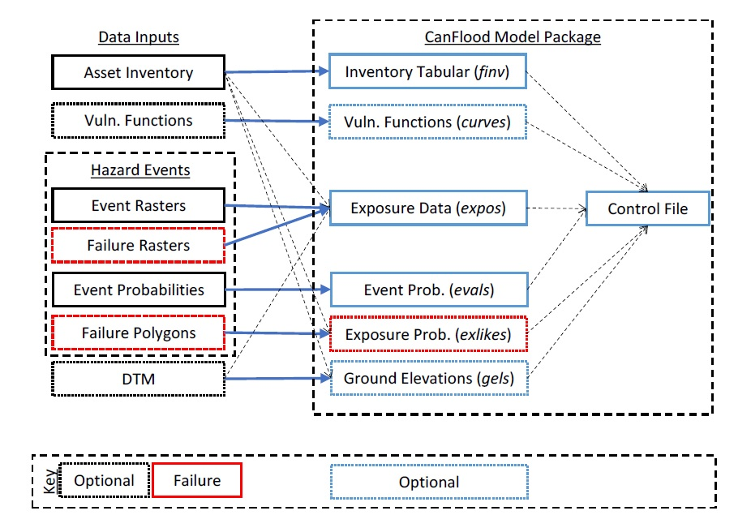Figure 1-1: CanFlood L2 model package and data-inputs relation diagram.
2. Installation¶
All installation instructions can be found on GitHub: https://github.com/NRCan/CanFlood
Once installed, you should see the three CanFlood buttons on your QGIS toolbar:
Additional tools are provided under QGIS’s plugins menu.
3. Applications and Workflows¶
The CanFlood plugin holds a collection of tools designed to support flood risk modellers with range of common tasks. To accomplish this, CanFlood is flexible: allowing users to link together whichever tools and sequences are needed to complete the task at hand. Performing a flood risk assessment using CanFlood requires expertise in flood risk modelling, some procedures like those referenced in Section1.1.2 , and generally employs the following steps:
Identifying the objectives, scope, and purpose of the assessment.
Selecting the appropriate CanFlood model level (Section1.3) then identifying the necessary input data.
Collecting and preparing the necessary input data (Section0).
Building the CanFlood model package (see below).
Running the CanFlood model package using the appropriate model tool (Section5.2).
Using CanFlood’s ‘Results’ tools to prepare diagrams and maps (Section5.3).
Evaluating, documenting, and communicating the results, context, and uncertainty.
As noted in the section references, many of these steps must be performed outside the CanFlood platform.
Building Models
Most workflows in CanFlood require the user to employ a similar sequence of the ‘Build’ tools described in Section5.1 to prepare the CanFlood model package (Figure1-1) from the input data. Figure3-1 shows a typical workflow from ‘Setup’ to ‘Validation’. Whether or not to include the optional steps shown on the diagram will depend on the following:
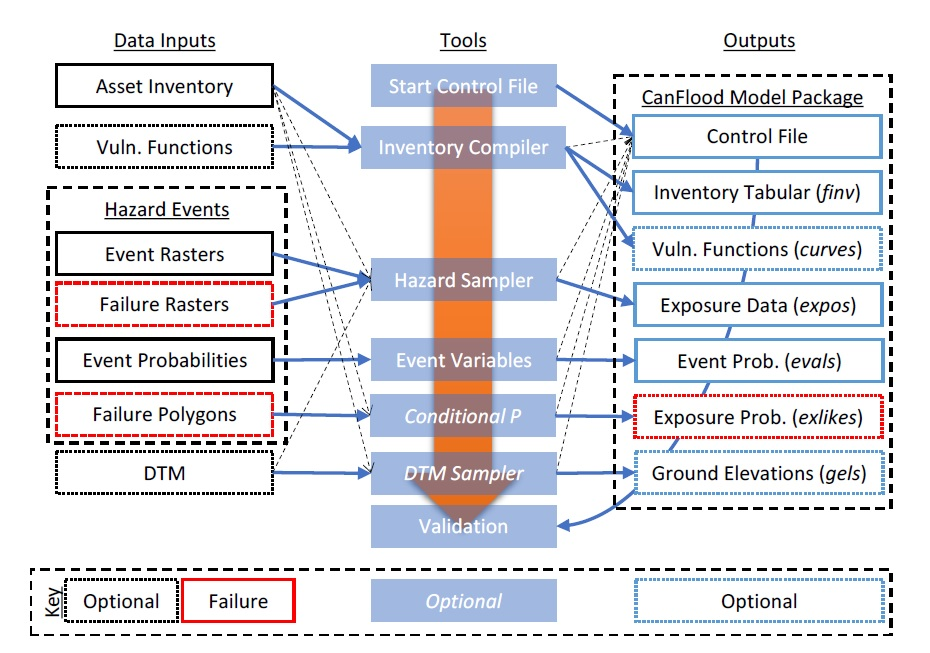
Risk model level: L2 models require vulnerability functions (‘curves’) (see Section3.2).
Defense failure: L1 or L2 models incorporating some protection failure require companion failure events (failure rasters and failure polygons) (see Section3.3).
Asset heights: L1 or L2 models incorporating asset inventories with object height data relative to ground require ground elevations data (‘gels’).
Exposure type: L1 or L2 models with non-point geometry assets evaluating exposure as a percentage of inundation (Section5.1.3) require a DTM layer.
Figure 3-1: Typical model construction workflow using CanFlood’s ‘Build’ tools from ‘Setup’ to ‘Validation’. Data inputs are described in Section 0 while tools and outputs are described in Section5.1
More information and additional tools to support model construction are provided in Section5.1 .
The remainder of this section summarizes some typical analysis types or workflows employing the risk models summarized in Section1.3 and discussed in detail in Section5.2 . All these workflows are risk-based, in that they incorporate a wide-range of event probabilities and calculate risk-metrics. The tutorials in Section 6 provide step-by-step instructions and accompanying input data to demonstrate these workflows.
3.1. Risk (L1) Exposure-Based Assessment¶
Exposure-based (L1) assessments quantify the probability of binary exposure of assets to flooding (wet vs. dry). This can be useful for initial assessments, where resources and data are limited, to identify areas for further study. In CanFlood, this is accomplished by collecting data, building a Risk (L1) model, running the model, and evaluating the results. Unlike vulnerability-based assessments (L2, Section3.2), exposure-based (L1) assessments do not capture the influence of flood depth on risk. In other words, a house with some ponding in the yard would be counted the same as a house fully under-water. However, exposure-based (L1) assessments can be used to estimate additional risk-metrics through application of CanFlood’s scaling parameters (e.g., estimating crop-loss by multiplying the area inundated by some loss/area constant). Exposure-based (L1) assessments can incorporate an assessment of defense failure if exposure probability data is available (Section3.3). Figure3-1 and Figure3-2 summarize a typical Risk (L1) workflow. For more information on the Risk (L1) model, see Section5.2.1.
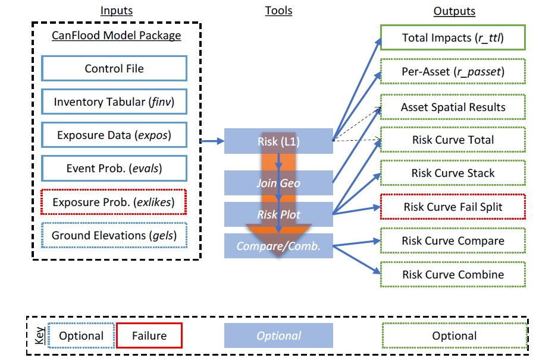Figure 3-2: Typical Risk (L1) workflow (post- model construction).
3.2. Risk (L2) Vulnerability-Based Assessment¶
Vulnerability-based (L2) assessments quantify the risk of some flood impacts to assets where the impact can be related to depth. Risk models that consider vulnerability as a function of flood depth are commonly used to evaluate flood risk to buildings, building contents, and infrastructure. In CanFlood, such an assessment is conducted by collecting data, constructing or collecting vulnerability functions, building a Risk (L2) model, running said model, then evaluating the results. Often the most challenging element of this process is the collection or construction of vulnerability functions (Section4.3) which future versions of CanFlood may provide support for. Vulnerability-based (L2) assessments generally incorporate an assessment of defense failure (Section3.3). Figure3-1 and Figure3-3 summarize a typical Risk (L2) workflow. For more information on the Risk (L2) model, see Section5.2.3.
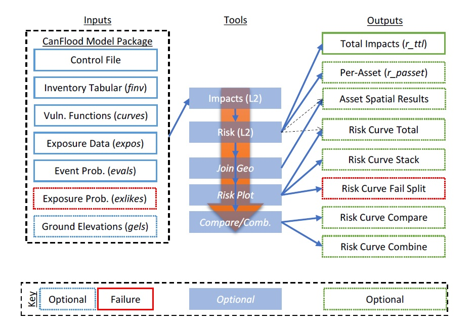Figure 3-3: Typical Risk (L2) workflow (post-model construction).
3.3. Defense Failure¶
Many developed areas in Canada rely on some form of flood defense infrastructure (e.g., levees or drainage pumps) to reduce the exposure of assets. Any such infrastructure has the potential to fail during a flood event. Ignoring this failure potential (P fail =0) will underestimate the real flood risk in an area (negative model bias). Assuming such infrastructure will always fail (P fail =1) can drastically overestimate flood risk (positive model bias). Either assumption will reduce confidence in the model and the quality of any flood management decisions made from it. In many areas in Canada, flood protection plays such a significant role in exposure mechanics that a binary treatment of failure probability (P fail = 0 or 1) would render the model’s calculated risk metric useless. Recognizing the importance of flood protection infrastructure in Canadian flood risk management, CanFlood Risk (L1) and Risk (L2) workflows facilitate the incorporation of defense failure into risk calculations.
A common application of this capability is the incorporation of levee fragility into a risk model. Often such study areas will have groups of levee-protected assets, where each asset is vulnerable to a breach point anywhere along a levee ring. This situation can be analyzed by discretizing the levee into segments, estimating the influence area of a breach along each segment (for event j), estimating the conditional probability of that breach occurring (during event j), and developing hazard rasters for the breach conditions. Qualified hydrotechnical and geotechnical professionals should be engaged to perform this analysis and generate the inputs required by CanFlood as summarized in Section4.2.
3.3.1. Workflow¶
Defense failure is incorporated into risk calculations during CanFlood’s Risk (L1) and Risk (L2) workflows with the following general steps:
Collect the set of hazard event rasters (Section4.2) and dike profile, fragility, and influence area information (Section4.5).
Calculate the dike failure probability of each hazard event and map it onto the dike influence area using the ‘Dike Fragility Mapper’ tool (Section5.4.1) to obtain the ‘failure polygon’ set.
From the ‘failure polygons’, extract, resolve, and assign conditional failure probabilities for each failure event into the resolved exposure probabilities (‘exlikes’) dataset using the ‘Conditional P’ tool (Section5.1.5).
Execute the Risk (L1) or Risk (L2) model to employ CanFlood’s algorithms to calculate expected values with defense failure (Section5.2.3 Events with Failure).
Figure3-4 summarizes CanFlood’s full expected value algorithm.
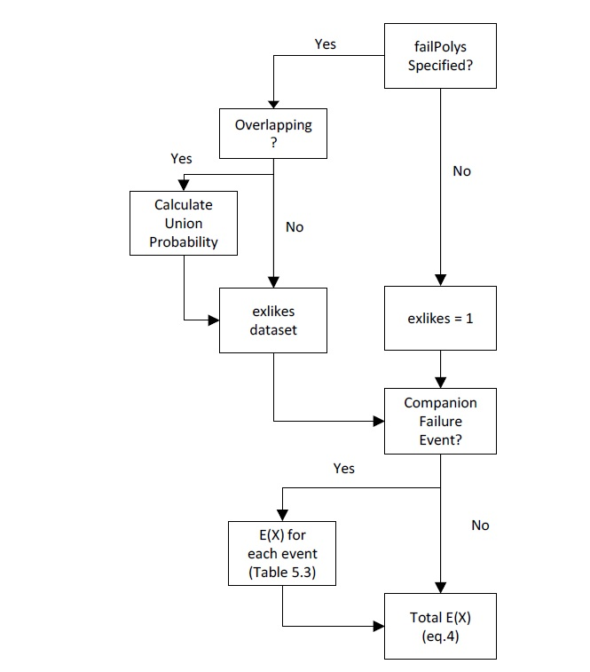Figure 3-4: CanFlood’s Risk (L1 and L2) tool expected value (E(X)) calculation algorithm
3.3.2. Event Relations¶
To calculate expected values (in more complex models), the application of both the ‘Conditional P’ tool and the risk models requires accounting for the relationship between the events supplied by the user. In other words, when multiple failures are specified, one must specify how those failures should/should-not be combined. Calculating and incorporating failure correlations between elements in a defense system requires a sophisticated and mechanistic understanding of the system that is beyond the scope of CanFlood. As an alternative approximation, CanFlood includes two basic assumptions, summarized in Figure3-5, for the relationship between failure elements. These alternate assumptions are provided to allow the user to test the sensitivity of the model to failure element correlations; if the model is found to have a high sensitivity to this parameter, more sophisticated defense system analysis should be pursued.
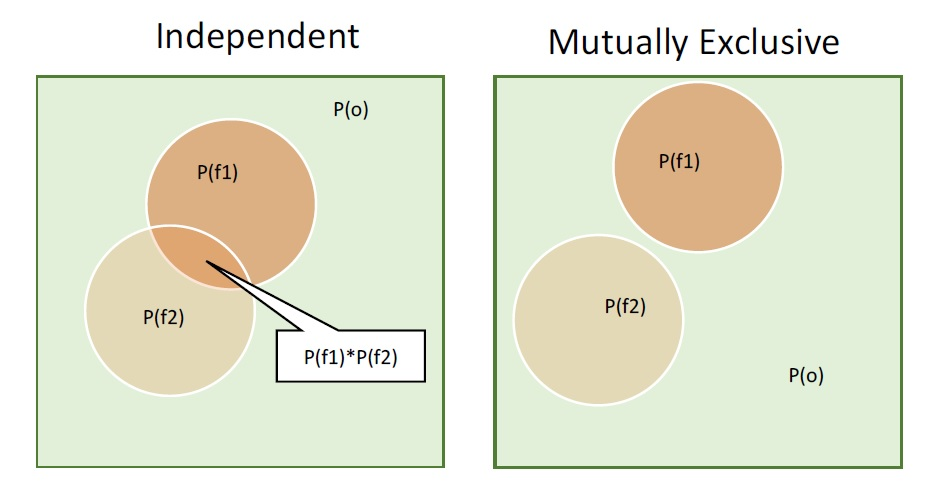Figure 3-5: Example probability space diagram showing two events either [left] independent or [right] mutually exclusive where ‘P(o)’ is the probability of no failures.
4. Inputs and Data Requirements¶
CanFlood models are only as useful as the datasets they are built with. Below is a summary of the main datasets the user must collect and compile prior to building a CanFlood model.
4.1. Asset Inventory¶
The asset inventory (‘finv’) is a comprehensive list of the objects or assets whose exposure will be evaluated by the CanFlood model routines. The asset inventory is a spatial dataset that requires the following fields when employed in Risk (L1) models:
fX_scale: value to scale the vulnerability function by (e.g., floor area);
fX_elv: elevation to anchor the vulnerability function (e.g., first floor height + DTM);
geometry: geospatial data used to locate the asset for sampling;
FieldName Index (cid): unique asset identifying integer used to link datasets.
For Impacts (L2) and Risk (L2) models, the following additional fields are required:
fX_tag: value telling the model which vulnerability function to assign to this asset;
fX_cap: value to cap vulnerability prediction by (e.g., improvement value).
Additional fields are allowed but ignored by CanFlood. The ‘X’ placeholder shown above is called the ‘nestID’ and is used to group the four key attributes that parametrize a ‘nested function’ required by the Impacts (L2) model (Section5.2.2). The ‘Build’ toolset provides a ‘Inventory Constructor’ tool that can populate an inventory template as a convenience; however, completing this template for a study area generally requires extensive data analysis outside the CanFlood plugin.
4.2. Hazard Events¶
CanFlood requires a set of ‘hazard events’ to calculate flood exposure and risk. For a risk calculation, each event should have:
Event probability: probability of the event occurring. This can be input as Annual Exceedance Probabilities (AEP) or Annual Recurrence Intervals (ARI). Often these are developed using statistical analysis of past flood events. As this information is not contained in the raster data file itself, best practice is to include it in the layer name.
Event raster: location and WSL of the flood event. CanFlood’s ‘Hazard Sampler’ tool (Section5.1.3) expects this as a raster data file, but CanFlood’s Model routines only require the tabular exposure data (‘expos’). Values must be relative to the project datum (WSL) and are typically developed using hydraulic modelling software.
Companion failure events (optional): contains information about the probability and resulting exposure of a flood protection system failure during the hazard event. Each hazard event can be assigned multiple failure events (see Section1.4) by specifying the same event probability for each in the ‘evals’ dataset (see Section5.1.4).
o Failure raster: location and WSL of the companion failure event.
o Failure polygon: Conditional exposure probability polygon layer with features indicating the extent and probability of element failures during the event. The ‘Dike Fragility Mapper’ tool (Section5.1.5) provides a set of algorithms for preparing these polygons from typical dike fragility information and event rasters. These failure polygons are needed by the ‘Conditional P’ tool to generate the resolved exposure probabilities (‘exlikes’) dataset required by the Risk (L1) and Risk (L2) modules.
4.3. Vulnerability Function Set¶
For the Impacts (L2) model, CanFlood requires an impact function library with a function for each asset tag in the inventory. The datafile is a .xls spreadsheet, where each tab corresponds to a separate impact function. Each tab contains:
metadata about the function (not used by CanFlood); and
a 1D function translating exposure to impact.
An example is provided below with a description. During the Impacts (L2) model, each asset interpolates its vulnerability function at the exposure value (from the ‘expos’ data set) to estimate the impact value. Typically, the exposure variables are depth and the impact variables are damages, but the user can customize the model by populating the ‘expos’ data set with alternative exposure variables and developing vulnerability functions with alternative outputs (e.g. persons displaced = f(percent inundated)).
Table 4-1: CanFlood impact function format requirements and description.
Field |
Example Value |
Description |
Required |
|---|---|---|---|
tag |
02Office.inEq.comp |
Linking variable used to assign this function to an asset in the inventory |
TRUE |
desc |
some description |
Long form description of the impact function. |
FALSE |
source |
BCStats NRP Survey (2020) |
Primary data source for the impact function. |
FALSE |
location |
BCs LowerMainland |
Geographic location of applicable assets |
FALSE |
date |
2020 |
Applicable period |
FALSE |
impact_units |
$CAD |
Units of impact output(after scaling) |
FALSE |
exposure _units |
m |
Units of expected impact input |
FALSE |
scale_units |
m2 |
Units of expected scale input |
FALSE |
exposure_var |
water height from main floor |
Variable of expected exposure input |
FALSE |
impact_var |
building repair and restoration cost estimation |
Variable of impact output (after scaling) |
FALSE |
scale_var |
main floor area |
Description of expected scale variable |
FALSE |
exposure |
impact |
Header for exposure- impact function |
TRUE |
0 |
0 |
First exposure-impact entry |
TRUE |
0.305 |
394.56 |
… |
TRUE |
0.914 |
543.05 |
Last exposure-impact entry |
TRUE |
4.4. Digital Terrain Model (DTM)¶
A project DTM is only required for those models with relative asset heights (elv).
4.5. Dike Information¶
To use the ‘Dike Fragility Mapper’ module (Section5.4.1) to generate the ‘failure polygon’ set, the following information on the study area’s diking system is required:
- Dike alignment: This line layer contains the following information on the study dikes:
o face of the dike: indicated by the direction of the feature, this tells CanFlood which side should of the feature to sample the WSL from
o the horizontal location of the dike crest (i.e. the position of features)
o how each dike should be segmented in the analysis (where each feature represents a segment)
o the dike identifier (for combining multiple segments onto a single plot)
o any freeboard buffers that should be applied (e.g., to simulate sand-bagging)
o which fragility curve should be used to calculate the failure probability of that segment.
Dike fragility function library: This special type of impact function (Section4.3) relates the WSL relative to the segment crest elevation (i.e., freeboard) against the probability of that segment failing (and realizing the provided failure WSL). Developing these relations often requires data on mechanical (e.g., foundation, core) and emergency repair properties (e.g., accessibility to maintenance vehicles) and sophisticated geotechnical analysis and expertise. While dike performance is generally sensitive to more types of loading than freeboard, CanFlood only supports single-variable fragility calculations.
Dike segment influence areas: These polygons provide the geometry of the area where assets would be impacted by a failure of a segment. Generally, this is similar to the extents of the failure raster (e.g., results of a hydraulic model breach run).
Digital Terrain Model (DTM) of dike crest: This is generally the same dataset as what’s described in Section 4.4; however, dike evaluation is particular sensitive to small changes in elevation and DTMs often have errors or artifacts around dike crests if not constructed for flood modelling. Therefore, users should emphasize DTM quality around dike crests when performing a fragility analysis.
5. Toolsets¶
This section describes the use and function of CanFlood’s toolsets in detail.
5.1. Build¶
The build toolset contains a suite of tools summarized in Table5-1 intended to aid the flood risk modeller in their construction of CanFlood L1 and L2 models.
Table 5-1: Build tools summary
Tab Name |
Tool Name |
Description |
Inputs |
Outputs |
|---|---|---|---|---|
Setup |
Start Control File |
Creates a Control File template |
name and precision |
Control File Template |
Inventory |
Inventory Constructor |
Builds a finv template |
vector layer, attributes |
inventory vector layer (‘finv’) |
Inventory |
Vuln. Function Library |
GUI for selecting a Function set |
Vulnerability Function Set |
|
Inventory |
Inventory Compiler |
Clip and extract finv data to tabular format |
‘finv’, parameters |
inventory tabular data (‘finv’) |
Hazard Sampler |
Raster Preparation |
Manipulate hazard rasters |
hazard rasters |
hazard rasters |
Hazard Sampler |
Sample Rasters |
Sample hazard raster values |
hazard rasters, ‘finv’, DTM |
exposure dataset (“expos”) |
Event Variables |
Store Evals |
Write event probabilities to file |
hazard event probabilities |
event variables (‘evals’) |
Conditional P |
Conditional P |
Resolve conditional exposure probabilities |
‘finv’, failure polygons |
exposure prob.(‘exlikes’) |
DTM Sampler |
DTM Sampler |
Sample DTM raster at asset geometry |
‘finv’, DTM |
ground elevations (‘gels’) |
Validation |
Validation |
Validate against model requirements |
complete model package |
5.1.1. Setup¶
This tab facilitates the creation of a Control File from user specified parameters and inventory, as well as providing general file control variables for the other tools in the toolset.
5.1.2. Inventory¶
The inventory tab contains a set of tools for constructing and converting flood asset inventories (‘finv’; Section4.1). The remainder of this section describes the available inventory tools.
Inventory Construction Helper
The optional ‘Inventory Construction Helper’ tool helps construct a Flood Asset Inventory template from some vector geometry within CanFlood’s ‘nested function’ framework (Section4.1). Additional data analysis outside the CanFlood platform is generally required to populate these fields.
Vulnerability Function Library
To support the construction of preliminary risk models, the CanFlood plugin provides a collection of vulnerability function libraries commonly used in Canada. Users should carefully study legacy vulnerability functions and their construction methods before incorporating them into any risk analysis. At a minimum, functions should be scaled to account for spatial and temporal transfers.
Inventory Compiler
The Inventory Compiler is a simple tool used to prepare an inventory vector layer for inclusion in a CanFlood model using the following process:
clip the selected vector layer by the AOI (if one is selected on the Setup tab);
extract non-spatial data to the working directory as a csv; and
write the file location of this csv and the Index FieldName to the control file.
5.1.3. Hazard Sampler¶
The Hazard Sampler tool generates the exposure dataset (“expos”) from a set of hazard event rasters. Generally, these hazard event rasters represent the WSL results of some hazard model (e.g. HEC-RAS) at specific probabilities. The hazard sampler has two basic modes:
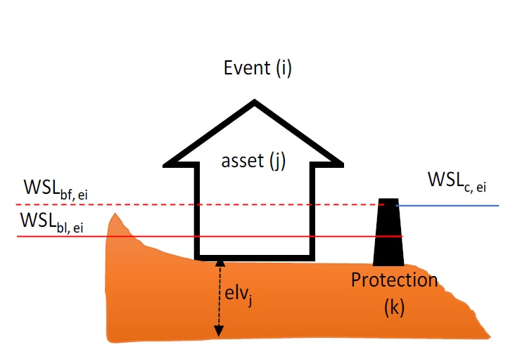
WSL: Sample raster values at each asset (default). For line and polygon assets, this requires the user specify a sampling statistic.
Inundation: Calculate percent-inundation of each asset (for line and polygon geometry only). This requires a DTM layer and a ‘Depth Threshold’ be specified.
Figure 5-1: Risk calculation definition diagram where the dashed line is the WSL value of event ‘ei’
- Using the definitions in Figure5-1, the WSL exposure from an event i to a single asset j with height elv j is calculated as:
expo i,j = WSL bl, ei - elv j
The hazard sampler performs the following general steps to the set of user-supplied hazard layers and inventory layer:
Slice the inventory layer by the AOI (if ‘Project AOI’ is specified)
For each layer, sample the raster value or calculate the percent inundation of each asset;
Save the results in the ‘expos’ csv file to the working directory and write this path to the Control File;
Load the results layer to canvas (optional)
Raster Preparation
The raster sampler expects all the hazard layers to have the following properties:
layer CRS matches project CRS;
layer pixel values match those of the vulnerability functions (e.g., values are typically meters);
layer dataProvider is ‘gdal’ (i.e., the tool does not support processing web-layers).
To help rasters conform to these expectations, CanFlood includes a ‘Raster Preparation’ feature on the ‘Hazard Sampler’ tab with the tools summarized in Table5-2.
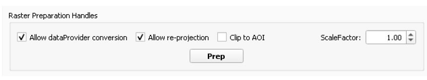Table 5-2: Raster Preparation tools
Tool Name |
Handle |
Description |
|
|---|---|---|---|
Downloader |
Allow dataProvider conversion |
If the layer’s dataProvider is not ‘gdal’ (i.e., web-layers), a local copy of the layer is made to the user’s ‘TEMP’ directory. |
|
Re-projector |
Allow re-projection |
If the layer’s CRS does not match that of the project, the ‘gdalwarp’ utility is used to re-project the layer. |
|
AOI clipper |
Clip to AOI |
This uses the ‘gdalwarp’ utility to clip the raster by the AOI mask layer. |
|
Value Scaler |
ScaleFactor |
For ScaleFactors not equal to 1.0, this uses the Raster Calculator to scale the raster values by the passed ScaleFactor (useful for simple unit conversions). |
|
After executing these tools, a new set of rasters are loaded to the project.
Sampling Geometry and Exposure Type
To support a wide range of vulnerability analysis, the Hazard Sampler tool is capable of developing WSL and inundation exposure variables from the three basic geometry types as shown in Table5-3. For line and polygon type geometries, the tool requires the user specify the sample statistic for WSL calculations, and a depth threshold for percent inundation calculations.
Table 5-3: Hazard Sampler configuration by geometry type and exposure type and [relevant tutorial.]
Geometry |
WSL |
Inundation |
|||||
|---|---|---|---|---|---|---|---|
Parameters |
Exposure |
Parameters |
Exposure |
||||
Point |
Default [Tutorial 2a] |
WSL |
Default [Tutorial 1a] |
WSL 1 |
|||
Line4 4 |
Sample Statistic 3, 5 |
WSL Statistic |
% inundation, Depth Thresh 2 [Tutorial 4b] |
% inundation |
|||
Polygon 4 |
Sample Statistic 3 |
WSL Statistic |
% inundation, Depth Thresh 2 [Tutorial 4a] |
% inundation |
|||
|
|||||||
5.1.4. Event Variables¶
The Event Variables ‘Store Evals’ tool stores the user specified event probabilities into the event variables (“evals”) dataset. The Hazard Sampler tool must be run first to populate the Event Variables table.
Notes and Limitations
The following apply to the Event Variables and connected tools:
The Risk (L1 and L2) modules require at least 3 events unique event probabilities.
5.1.5. Conditional P¶
To incorporate defense failure (Section1.4), CanFlood ‘Risk (L1)’ and ‘Risk (L2)’ models expect a resolved exposure probabilities (‘exlikes’) data set that specifies the conditional exposure probability of each asset to each hazard failure raster. The ‘Conditional P’ tool provides a conversion from a collection of failure influence area polygons and rasters (i.e., the outputs of a flood protection reliability analysis) to the resolved exposure probabilities (‘exlikes’) dataset. For each conditional failure event, the ‘Conditional P’ tool expects the user to provide a pair composed of the following layers:
Raster of WSL that would be realized in the failure event
Vector layer with polygon features indicating the extent and probability of element failures during the hazard event (‘failure polygons’). These features can be non-overlapping (simple conditionals) or overlapping (complex conditionals) as discussed below.
The user can specify up to eight event-raster/conditional-exposure-probability-polygon pairings with the GUI.
CanFlood distinguishes ‘complex’ and ‘simple’ conditional exposure probability polygons based on the geometry overlap of their features as summarized in Table5-4 and shown in Figure5-2.
Table 5-4: Conditional exposure probability polygon treatment summary.
Type |
Features |
Treatment |
Example (Figure 5-5) |
|---|---|---|---|
trivial |
none |
Failure not considered, no resolved exposure probabilities (‘exlikes’) required |
n/a |
simple |
not overlapping |
‘Conditional P’ tool joins the specified attribute value from the polygon feature onto each asset to generate resolved exposure probabilities (‘exlikes’). |
f2, f3 |
complex |
overlapping |
see below |
f1 |
Figure 5-2:Simple [left] vs. Complex [right] conditional exposure probability polygon conceptual diagram showing a single layer with four features.
For complex conditionals, ‘Conditional P’ provides two algorithms to resolve overlapping failure polygons down to a single failure probability (for a given asset on a given failure raster) based on two alternate assumptions for the mechanistic relation between the failure mechanisms summarized in Table5-5.
Table 5-5: Conditional exposure probability polygon resolution algorithms for complex conditional
Relation |
Algorithm Summary |
|
|---|---|---|
Mutually Exclusive |
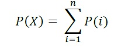 | |
Independent 1 |
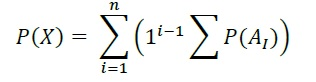 | |
Where P(X) is the resolved failure probability for a single asset on a given event and P(i) isthe failure probably value sampled from a failure polygons feature.
|
||
5.1.6. DTM Sampler¶
The DTM Sampler tool uses the same module as the Hazard Sampler to sample DTM raster values at each asset provided in the inventory vector layer. This tool outputs the ground elevation (‘gels’) dataset and writes the corresponding reference to the control file. This dataset is required by any model where the inventory (‘finv’) data’s height or elevation parameters are specified relative to ground (felv=’ground’).
5.1.7. Validation¶
The Validation tool performs a series of checks on the specified control file to ensure the data requirements of the specified model are satisfied. If the checks are satisfied, the corresponding validation flag is set in the control file, allowing the model tool to run.
5.2. Model¶
The ‘Model’ toolset provides a GUI to facilitate access to CanFlood’s 3 flood risk models. CanFlood’s L2 models are split between exposure and risk to facilitate custom applications (these can be linked using the ‘Run Risk Model (L2)’ checkbox). The following tabs are implemented in CanFlood’s Model toolset:
Setup: Filepaths, run descriptions, and optional parameters used by all Model tools;
Risk (L1): Inundation likelihood analysis;
Impacts (L2): Part one of the L2 models, exposure per event calculated with vulnerability functions;
Risk (L2): Part two of the L2 models, expected value of all event impacts;
Risk (L3): SOFDA research model
Batch Runs
To facilitate batch simulations for advanced users, all CanFlood modelling modules have reduced dependency requirements (e.g. the QGIS API is not required).
Parameter Summary
The following table summarizes the relevant parameters for CanFlood’s model toolset that can be specified in the Control File:
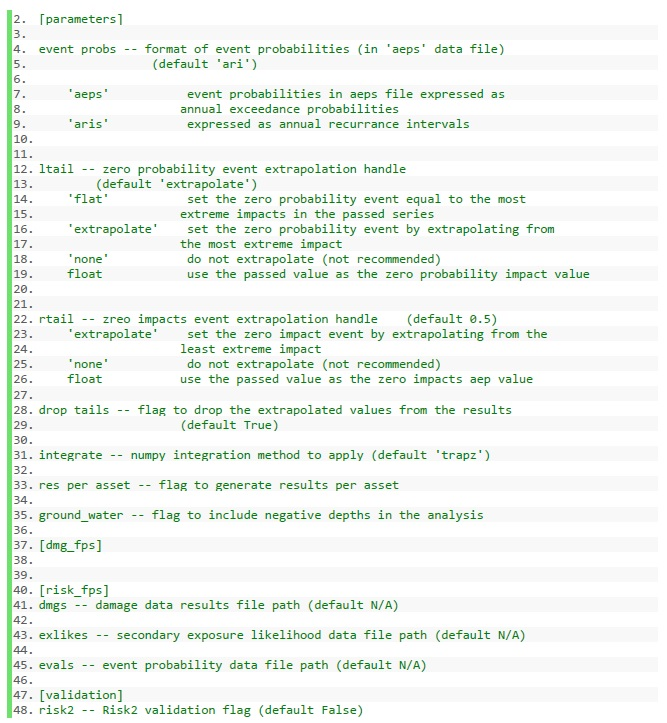Some of these can be configured with CanFlood’s ‘Build’ toolset UI, while others must be specified manually in the Control File.
5.2.1. Risk (L1)¶
CanFlood’s L1 Risk tool provides a preliminary assessment of flood risk with binary exposure as discussed in Section3.1. This tool also supports conditional probability inputs to incorporate flood protection failures. Table5-6 summarizes the input requirements for the Risk (L1) model, which are generally prepared using the ‘Build’ tools (Figure3-1).
Table 5-6: Risk (L1) CanFlood model package requirements.
Name |
Description |
Build Tool |
Code |
Reqd. |
|---|---|---|---|---|
Control File |
Data file paths and parameters |
Start Control File |
yes |
|
Inventory |
Tabular asset inventory data |
Inventory Compiler |
finv |
yes |
Exposure |
WSL or %inundated exposure data |
Hazard Sampler |
expos |
yes |
Event Probabilities |
Probability of each hazard event |
Event Variables of applicable |
evals |
yes |
Exposure Probabilities |
Conditional probability of each asset realizing the failure raster |
Conditional P |
exlikes |
for failure |
Ground Elevations |
Elevation of ground at each asset |
DTM Sampler |
gels |
for felv=ground |
The Risk (L1) module can be used to estimate a range of simple-metrics through creative use of the asset inventory (‘finv’) fields discussed in Section4.1. When the ‘scale’ factor is set to 1, ‘height’ to zero, and no conditional probabilities are used (typical for inundation analysis), most of the calculation becomes trivial as the result is simply the impact values provided by the ‘expos’ table (with the exception of the expected value calculation).
Outputs provided by this tool are summarized in the following table:
Table 5-7: Risk model output file summary.
Output Name |
Code |
Description |
|---|---|---|
total results |
r_ttl |
table of sum of impacts (for all assets) per event and expected value of all events (EAD) |
per-asset results |
r_passet |
table of impacts per asset per event and expected value of all events per asset |
risk curve |
risk curve plot of total impacts |
5.2.2. Impacts (L2)¶
CanFlood’s ‘Impacts (L2)’ tool is designed to perform a ‘classic’ object-based deterministic flood damage assessment using vulnerability curves, asset heights, and WSL values to estimate flood impacts from multiple events. This tool calculates the impacts on each asset from each hazard event (if the provided raster WSL was realized). ‘Impacts (L2)’ does not consider or account for event probabilities (conditional or otherwise) as these are handled in the Risk (L2) module (see Section5.2.3). Model package requirements are summarized in the following table:
Table 5-8: Impacts (L2) model package requirements.
Name |
Description |
Build Tool |
Code |
Reqd. |
|---|---|---|---|---|
Control File |
Data file paths and parameters |
Start Control File |
yes |
|
Inventory |
Tabular asset inventory data |
Inventory Compiler |
finv |
yes |
Exposure |
WSL or %inundated exposure data |
Hazard Sampler |
expos |
yes |
Ground Elevations |
Elevation of ground at each asset |
DTM Sampler |
gels |
for felv=ground |
Vulnerability Function Set |
Collection of functions relating exposure to impact |
Vulnerability Function Library |
curves |
yes |
Impacts (L2) outputs are summarized in the following table, where only the ‘dmgs’ output is required by the Risk (L2) model:
Table 5-9: Impacts (L2) outputs.
Output Name |
Code |
Description |
|---|---|---|
total impacts |
dmgs |
total impacts calculated for each asset |
expanded component impacts |
dmgs_expnd |
complete impacts calculated on each nested function of each asset (see below) |
impacts calculation summary |
bdmg_smry |
workbook summarizing components of the impact calculation (see below) |
depths |
depths_df |
depth values calculated for each asset |
impact histogram summary |
summary plot of total impact values per-asset |
|
impact box plot |
summary plot of total impact values per-asset |
Nested Functions
To facilitate complex assets (e.g. a house vulnerable to structural and contents damages), Impacts (L2) supports composite vulnerability functions parameterized with the 4 key attributes (‘tag’, ‘scale’, ‘cap’, ‘elv’) with the ‘f’ prefix and ‘nestID’ numerator (e.g. f0, f1, f2, etc.) discussed in Section 4.1. In this way, CanFlood can simulate a complex vulnerability function by combining the set of simple component functions to estimate flood damage. An example entry in the asset inventory (‘finv’) for a single-family dwelling may look like:
xid |
f0_tag |
f0_scale |
f0_cap |
f0_elv |
f1_cap |
f1_elv |
f1_scale |
f1_tag |
14879 |
BA_S |
117.99 |
91300 |
11.11 |
20000 |
11.11 |
117.99 |
BA_C |
Where BA_S corresponds to a vulnerability function for estimating structural cleanup/repair, and BA_C estimates household contents damages (both scaled by the floor area). Additional fX columns could be added as component vulnerability functions for basements, garages, and so on. Each of group of four key attributes is referred to as a ‘nested function’, where the collection of nested functions comprises the complete vulnerability function of an asset.
Impacts (L2) calculates the impact of an event ei to a single asset j from its collection of nested vulnerability functions k as:
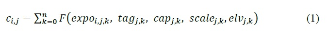Where each nested vulnerability function is parameterized by the following provided in the control file (Section4.1):
tag: variable linking the asset to the corresponding vulnerability curve in the vulnerability curve set (‘curves’);
cap: maximum value cap placed on the vulnerability curve result;
scale: scale value applied to the vulnerability curve result;
elv: vertical distance from the exposure value.
And the following provided in the exposure dataset (‘expos’):
expo: magnitude of flood exposure sampled at the asset.
The ‘Impacts (L2)’ routine first calculates the impacts of each nested function, then scales the values, then caps the values, before combining all the nested values to obtain the total impact for a given asset.
Generally, the exposure dataset (‘expos’) is constructed with the ‘Hazard Sampler’ (Section5.1.3) tool and contains a set of sampled WSL for each asset and each event. However, the only requirements on the ‘expos’ file are that it matches the expectations of the vulnerability functions referenced by the ‘curves’ parameter (Section4.3).
Ground Water
To improve performance, Impacts (L2) only evaluates assets with positive depths (when ‘ground_water’=False) and real depths. By specifying ‘ground_water’= True , negative depths (within the minimum depth found in all loaded damage functions) can be included in the calculation.
Object Level Mitigation Measures
The ‘Impacts (L2)’ model facilitates the modelling of exposure reductions brought about by object (or property) level mitigation measures (PLPM) such as backflow valves or sandbagging. The real effect of such interventions on the hydraulic exposure of buildings or property is complex and may be influenced by: 1) active vs. passive nature of the PLPM; 2) the warning time and time of day or year (for active PLPMs); 3) hydraulic loading on the PLPM; 4) quality of installation of PLPM; 5) operator experience or error (for active PLPMs); 6) maintenance of the PLPM. CanFlood does not consider this complexity; instead, CanFlood facilitates the user’s approximation through simple thresholds, scale factors, and addition values. This parameterization should be provided for each asset in the inventory vector layer (‘finv’) with Section5.2.2 the following fields:
Lower threshold (mi_Lthresh): All depths below this will generate an impact value of zero.
Upper threshold (mi_Uthresh): All depths above this will NOT have impact scale factors or impact addition values applied.
Impact scale factor (mi_iScale): For depths below the ‘upper threshold’, impact values will be scaled by this factor.
Impact addition value (mi_ iVal): For depths below the ‘upper threshold’, impact values will have this value added to them.
Additional Outputs
For advanced analysis, users can select the ‘dmgs_expnd’ option to output the complete impacts calculated on each nested function of each asset. This large, intermediate, data file provides the raw, scaled, capped, and resolved 2 impact values for each asset and each nested function. This can be useful for additional data analysis and troubleshooting but does not need to be output for any model routines (i.e., it is provided for information only).
Another optional output is supplied through the ‘bdmg_smry’ function and corresponding parameter that summarizes the results of each step or routine in the ‘Impacts (L2)’ module. The first tab in the spreadsheet, ‘_smry’, shows the total impacts for each event at each routine in the module. The next group of tabs summarize the impacts calculated on each ftag for the corresponding routine (e.g., ‘raw’, ‘scaled’, ‘capped’, ‘dmg’, ‘mi_Lthresh’, ‘mi_iScale’, ‘mi_iVal’). Two additional tabs are provided to summarize the calculations of the capping routine (i.e., ‘cap_cnts’ and ‘cap_data’).
5.2.3. Risk (L2)¶
CanFlood’s ‘Risk (L2)’ tool is designed to perform a ‘classic’ object-based deterministic flood risk assessment using impact estimates and probabilities to calculate an annualized risk metric. Beyond this classical risk model, ‘Risk (L2)’ also facilitates risk estimates that incorporate conditional hazard events, like levee failure during a 100-yr flood. This can be conceptualized with Sayers (2012)’s ‘source-pathway-receptor’ framework as shown in Figure5-3, where:
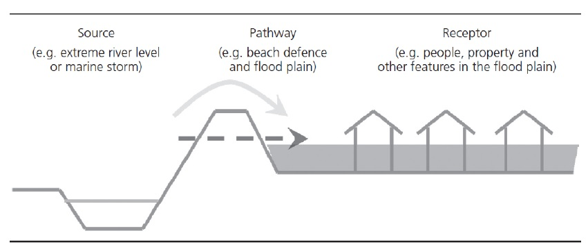
Source: WSL prediction (in raster format) for levels behind the defense (e.g. levee) of an event with a quantified likelihood.
Pathway: The infrastructure element separating receptors (i.e. assets) from the raw WSL prediction. Typically, this is a levee, but could be any element where ‘failure’ likelihood and WSL can be quantified (e.g. stormwater outfall gates, stormwater pumps).
Receptor: Assets vulnerable to flooding where location and relevant variables are catalogued in the inventory and vulnerability is quantified with a depth-damage function.
Figure 5-3: Sayers (2012)”s Source-Path-Receptor framework.
Model package requirements for the Risk (L2) tool are summarized in the following table:
Table 5-10: Risk (L2) model package requirements.
Name |
Description |
Build Tool |
Code |
Reqd. |
|---|---|---|---|---|
Control File |
Data file paths and parameters |
Start Control File |
yes |
|
Event Probabilities |
Probability of each hazard event |
Event Variables |
evals |
yes |
Exposure Probabilities |
Conditional probability of each asset realizing the failure raster |
Conditional P |
exlikes |
for failure |
Total impacts |
Output of Impacts (L2) model |
N/A |
dmgs |
yes |
Outputs provided by this tool are summarized in Table5-7.
Events without Failure
A simple application of the ‘Risk (L2)’ model is a study area with no significant flood protection infrastructure (e.g., a floodplain with no levees), like in Tutorial 2a (Section6.2). In this case, each hazard event has a single probability and a single raster and the results from the ‘Impacts (L2)’ tool simply need to be integrated to yield the annualized risk metric. The primary risk metric calculated by CanFlood is the expected value of flood impacts E[X] (also called Expected Annual Damages (EAD), or Average Annual Damages (AAD), or Annualized Loss) and is defined for discrete events as:
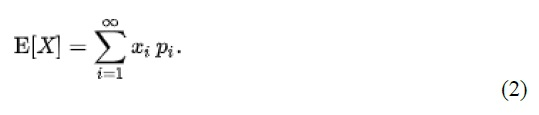Where x i is the total impact of the event i and p i is the probability of that event occurring. While flood models discretize events out of necessity (e.g., 100yr, 200yr), real floods generate continuous hazard variables (e.g., 100 – 200yr). Therefore, the continuous form of the previous equation is required:
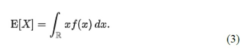Where f(x) is a function describing the probability of any event x (i.e., the probability density function) (USACE 1996). To align with typical discharge-likelihood expressions common in flood hazard analysis, the previous equation is manipulated further to:
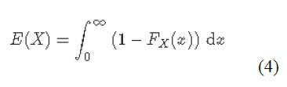Where Fx(x) is the cumulative probability of any event x (e.g. cumulative distribution function). Recognizing that the complement of Fx(x) is the annual exceedance probability (AEP) (the probability of realizing an event of magnitude x or larger), this equation yields the classic ‘Risk Curve’ common in flood risk assessments shown in Figure5-4.
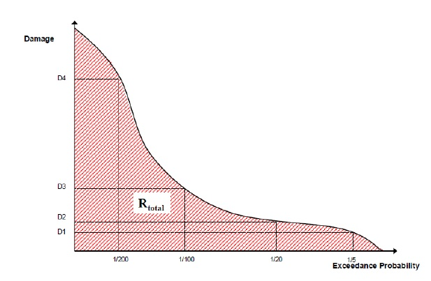Figure 5-4: Damage-probability Curve from Messner (2007).
The following algorithm is implemented in CanFlood’s ‘Risk (L1)’ and ‘Risk (L2)’ models to calculate expected value:
Assemble a series of AEPs and total impacts for each event;
Extrapolate this series with the user provided extrapolation handles (‘rtail’, and ‘ltail’);
Use the numpy integration method specified by the user to calculate the area under the series.
The same algorithm is used for calculating the total expected value across all assets and for the expected value of individual assets (if ‘res_per_asset’=True).
Events with Failure
When resolving a hazard event with some failure, CanFlood combines the expected value (E(X)) of each companion failure event with that of a base ‘no-fail’ event to obtain the event’s total expected value required by the risk metric equation (formula 4). To provide flexibility in the data requirements from a defense reliability analysis, CanFlood distinguishes two failure event analysis dimensions based on the geometry of the provided conditional exposure probability polygons (‘failure polygons’) and the number of failure events as summarized in Figure5-5. ‘Failure polygons’ complexity is discussed in Section 5.1.5 and is resolved into the resolved exposure probabilities (‘exlikes’) dataset by calculating a single exposure probability for each companion failure event (Figure5-5 ‘b1’ and ‘b2’ into ‘f1’). Once simplified into this resolved exposure probabilities (‘exlikes’) dataset, a failure event’s failure polygons set relation, count, and complexity is ignored.
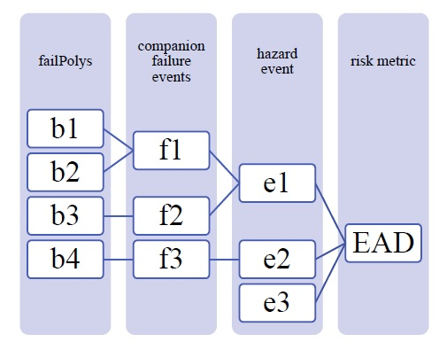Figure 5-5: Example diagram showing three hazard events, one without failure (e3), one with simple (e2) and one with complex failure events (e1), and two companion failure events with simple (f2, f3) and the other (f1) with complex conditional exposure probability polygons (failure polygons).
Table5-11 summarizes the treatment of hazard events based on the count of failure events assigned to each.
Table 5-11: Hazard event treatment by failure event count.
Type |
Count |
Treatment 1 |
Example (Figure5-5) |
|---|---|---|---|
trivial |
0 |
E(X)fail=0 E(X)nofail from equation 2 |
e3 |
simple |
1 |
‘max’ or ‘mutEx’ |
e2 |
complex |
>1 |
‘max’, ‘mutEx’ or ‘indep’ |
e1 |
|
|||
Events with Complex Failure
Table5-12 summarize the algorithms implemented in CanFlood to calculate expected value for those hazard events with more than one companion failure event i.e., ‘complex’ failure events.
Table5-12: Expected value algorithms for failure events.
name |
Count |
summary |
|---|---|---|
Modified Maximum |
max |
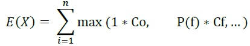 |
Mutually Exclusive |
mutEx |
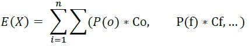 |
Independent |
indep |
|
P(o) = 1-sum(C i) |
||
5.2.4. Risk (L3)¶
Bryant (2019) developed the Stochastic Object-based Flood damage Dynamic Assessment model framework (SOFDA) to simulate flood risk over time using the Alberta Curves and a residential re-development forecast. Framework development was motivated by a desire to quantify the benefits of Flood Hazard Regulations (FHRs) and to help incorporate the dynamics of risk into decision-making. SOFDA quantifies flood risk of an asset through the use of direct-damage and depth-likelihood functions. In this way, flood risk can be quantified (e.g. monetized) at fine spatial resolutions for robust decision support.
SOFDA has the following capabilities:
Estimate the vulnerability reduction of Flood Hazard Regulations;
Estimate the vulnerability reduction of Property Level Protection Measures;
Estimate the influence of elevating damage-features (e.g., raising water heaters);
Simulate changes in relevant building typology brought about by re-development (e.g., larger homes with deeper basements);
Dynamic and flexible modeling of many model components (e.g., more expensive water heaters)
Provide some quantification of uncertainty (i.e., stochastic modeling);
Provide detailed outputs to facilitate the analysis of underlying mechanisms.
For additional information and guidance, see Appendix B.
5.3. Results¶
The ‘Results’ toolset is a collection of tools to assist the user in performing secondary data analysis and visualization on CanFlood models. The remainder of this section describes the function of the tools within this toolset.
5.3.1. Join Geo¶
This tab provides a tool to join the non-spatial risk results back onto the inventory geometry for spatial post-processing. A basic version of this tool can be run automatically by the ‘Risk (L1)’ and ‘Risk (L2)’ tools. On the ‘Join Geo’ tab, the user can perform additional customization of these layers, including applying pre-packaged layer styles.
5.3.2. Risk Plot¶
This tab contains multiple tools for generating non-spatial plots on a single model scenario. The plots generated on this tab all pull style information from the Control File’s ‘[plotting]’ group, and results data from the ‘[results_fp]’ group. Plots are available in the two standard risk curve formats:
ARI vs. Impacts
Impacts vs. AEP
See Section6.3.3 for examples.
Plot Total
This tool generates a simple plot of the total results. A basic version of this tool can be run automatically from the ‘Risk (L1)’ and ‘Risk (L2)’ tools for convenience.
Plot Stack
This tool generates risk curves showing the total contributions from each composite vulnerability functions discussed in Section4.1 on a single plot.
Plot Fail Split
This tool generates composite risk curve showing the total results with a second curve showing the contribution from the ‘non-failure’ portion of each event (i.e., subtracting any contributions from companion failure events) on a single plot.
5.3.3. Compare/Combine¶
This tab provides two tools for combining or comparing multiple CanFlood models within a single analysis. For example, a flood risk analysis considering agricultural losses and residential building damages would generally construct two separate models (i.e., separate control files) and combine the results at the end to understand the total risk. Alternatively, an analysis may wish to compare two mitigation alternatives.
Compare
The compare tool collects the total results dataset (‘r_ttl’) and parameters from the set of specified control files and produces two comparison outputs:
Control file comparison: generates a datafile populated with the parameters from each selected control file, and a final column indicating if the parameter varies across the set. This can be useful to indicate what separates two CanFlood models.
Plot comparison: creates a risk curve plot comparing the total results data set (‘r_ttl’) of all selected control files. Default plot values are taken from the control file specified on the ‘Setup’ tab.
Combine
The combine tool collects the total results dataset (‘r_ttl’) and parameters from the main control file (from the ‘Setup’ tab) to generate two types of outputs:
Composite scenario: Select this option when running the “Combine” tool to generate a new composite control file and “r_ttl” results file for further analysis.
Plot combine: creates a stacked risk curve showing the contribution towards the total risk of each selected control file.
5.3.4. Benefit-Cost Analysis¶
This tab provides two tools to support basic benefit-cost calculations commonly used in flood mitigation options assessments. Benefit-cost analysis (BCA) is a complex process discussed elsewhere (Merz et al. 2010; Smith et al. 2016; IWR and USACE 2017) that carries many challenges and short-comings when applied to decisions around flood mitigation (O’Connell and O’Donnell 2014; Hosein 2016). In short, BCA compares the net-present value of an intervention’s costs (e.g., construction, maintenance) to the benefit or flood-loss avoidance gained by the intervention. Through the application of a discounting rate in these net-present value calculations, BCA are sensitive to the timing or accrual of benefits and costs. A typical workflow in CanFlood implementing BCA is provided below:
To support simple BCA calculations, CanFlood’s ‘BCA’ tab provides the following tools:
Copy BCA Template
This tool copies the CanFlood BCA template (‘cf_bca_template_01.xlsx’, see below), which has a ‘smry’ and ‘data’ tab, and populates the ‘smry’ tab with metadata from the main control file. This .xlsx file provides a generic template for inputting project cost and benefit time series and calculating summary financial values, like benefit-cost ratio, using EXCEL’s built-in formulas. The workbook contains excel ‘notes’ and implements the following styles to guide users when completing the template:
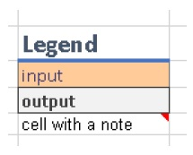A portion of the ‘data’ tab is provided below. Users should populate the input cells using the development, operating, and flood loss avoidance values for the option under consideration. Key cells on the ‘input’ tab are ‘named’ to facilitate populating the data tab dynamically.
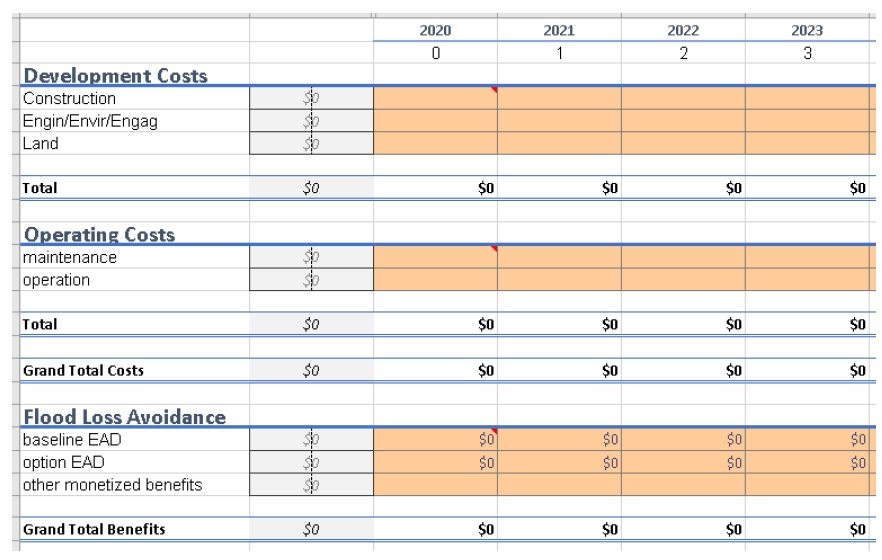Figure 5-6: CanFlood BCA template ‘data’ tab.
Once the ‘data’ tab is complete, enter an appropriate ‘discount rate’ should be entered on the ‘smry’ tab. Positive discounting rates are commonly used in financial analysis to reflect the view that things of value (e.g., capital) are worth more today than in the future. This should not be confused with inflation. The application of positive discounting rates is inappropriate when evaluating assets with increasing scarcity, like ecosystem function and wild spaces. Some authors and guidelines propose variable discounting rates (Smith et al. 2016). Guidance on selecting an appropriate discounting rate is provided elsewhere (Farber 2016).
After populating the ‘data’ and ‘smry’ tabs, the workbook should display the results summarized below:
- PV benefits $
Present Value of benefit totals
- PV costs $
Present value of cost totals
- NPV $
Net-present value of costs and benefits
- B/C ratio
Ratio of PV benefits over PV costs
Plot Financials
This tool generates a financial time-series plot of the benefit and cost data contained in the BCA worksheet.
5.4. Additional Tools¶
The following section describes some additional tools provided in the CanFlood platform that support flood risk modelling in Canada. These can be accessed from the CanFlood menu (Plugins > CanFlood).
5.4.1. Dike Fragility Mapper¶
For risk models that incorporate dike defense failure, a dataset containing the conditional probabilities of each asset realizing the failure, called the resolved exposure probability (‘exlikes’) dataset, is required by the Risk (L1) and Risk (L2) modules. Generally, this dataset is generated from a set of ‘failure polygons’ using the ‘Conditional P’ tool in the build toolset (Section5.1.5). While some projects may have these ‘failure polygons’ available, often only event rasters and the dike information discussed in Section4.5 is available. For cases like this, the workflow summarized in Figure5-7 can be employed, beginning with the ‘Dike Fragility Mapper’ tool which provides a collection of algorithms that can be used to generate failure polygons from typical dike information.
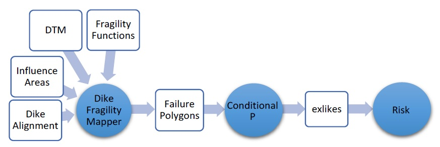Figure 5-7: Typical CanFlood tools workflow, incorporating dike fragility, where the ‘Dike Fragility Mapper’ tool is used to develop the failure polygons data layer.
The ‘Dike Fragility Mapper’ tool is similar in many ways to the Impacts (L2) module applied to assets with linear geometry, but with the addition of special offset raster sampling, intelligent joining of the results to polygons, and segmentation considerations specific to dike analysis. This tool is executed in the three steps summarized below. For more information on applying this tool, see Tutorial 6a (Section6.11).
Dike Exposure
The dike exposure sub-tool determines the location of highest vulnerability on each dike segment, then returns the corresponding freeboard value of each event raster yielding the dike segment exposure (‘dexpo’) dataset. This is accomplished with the following sequence:
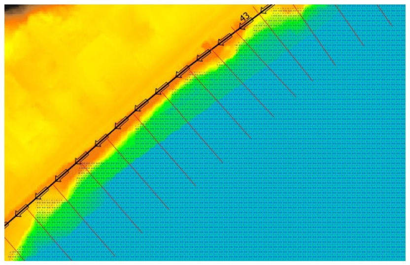
Generate transects at specified intervals on specified side of each dike segment (red lines on Figure5-8).
Sample the dike crest elevation from the DTM raster at the head of each transect;
Sample each event WSL raster on each transect;
Calculate the freeboard values on each transect as the difference between the sampled WSL and crest elevation values;
Calculate the segment freeboard value by applying the summary statistic to the relevant transect values (default is the minimum value).
Figure 5-8: Example algorithm components for the Dike Fragility Mapper tool’s exposure routine
This sub-tool provides the following outputs:
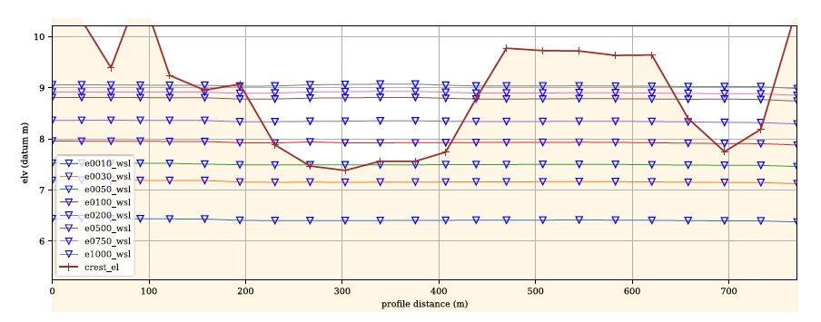
dike segment exposure (‘dexpo’) dataset: freeboard .csv output and main input to the Dike Vulnerability sub-tool;
processed dikes layer (optional): this is a modified version of the original input file, showing the ‘dexpo’ data on the original dikes geometry.
transects layer (optional): these are the perpendicular segments of length and spacing specified by the user where the crest elevation and WSL sampling are performed at the head and tail respectively;
transect exposure points (optional): each transect head with all calculated values;
breach points layer (optional): transect heads with negative freeboard values;
dike segment profile plots (optional): profile plot of dike segment showing sampled crest elevations and WSL (see below).
Dike Vulnerability
The ‘Dike Vulnerability’ sub-tool feeds the relevant entry in the dike segment exposure (‘dexpo’) dataset into the fragility curve associated with each dike segment. This sub-tool outputs tabular failure probability data (‘pfail’) csv file.
The following algorithms are available to adjust the resulting failure probabilities for the ‘length effect’:
URS (2008): normalize all failure probabilities by the set of segment lengths.
A similar secondary output is provided for these length-adjusted values.
Dike Failure Probability Results Join
This tool simply joins the selected tabular failure probability data to provided dike influence polygons to generate the ‘failure polygons’ required by the ‘Conditional P’ tool (Section5.1.5).
Notes and Considerations
When applying the Dike Fragility Mapper to your project, the following should be considered:
CanFlood does not perform any hydraulic analysis, the user must supply influence polygons denoting the area over which assets should have their probability of realizing the corresponding failure raster WSL. Considering this, influence polygons can safely extend beyond the raster extents without affecting the calculation of failure impacts.
Fragility functions should be developed and tagged to each raster segment by a qualified geotechnical expert using field data.
5.4.2. Add Connections¶
CanFlood’s ‘Add Connections’ 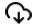 tool adds a pre-compiled set of web-resources to a user’s QGIS profile for easy access and configuration (i.e., adding credentials). The set of web-resources added by this tool are configured in the ‘canflood_parsWebConnections.ini’ file (in the user’s plugin directory). Appendix A summarizes the web-connections added by this tool.
{kind=link}
The QGIS User Guide explains how to manage and access these connections. Once the resources are added to a user’s profile, two basic methods can be used to add the data to the project:
Browser Panel: This is the simplest method but does not support any refinement of the data request. On the Browser Panel, expand the provider type of interest (e.g., ArcGisFeatureServer) > expand the connection of interest > select the layer of interest > right click > Add Layer To Project.
Data Source Manager: This is the recommended method as it provides more versatility when adding from data connections. Open the Data Source Manager (Ctrl + L) > select the provider type of interest > select the server of interest > select the layer of interest > specify any additional request parameters > click ‘Add’ to load the layer in the project.
Many plugins and tools used by QGIS (and CanFlood) do not support such web-layers (esp. rasters), so conversion and download may be required.
5.4.3. RFDA Converter¶
The Rapid Flood Damage Assessment (RFDA) tool was developed by the Province of Alberta in 2014 as a QGIS 2 plugin. RFDA did not include any spatial analysis or risk calculations. RFDA inventories are in Excel spreadsheet format (.xls) indexed by column location (not labels). Curves are tagged to assets using a concatenation of columns 11 and 12. Many columns in the inventory are ignored in RFDA. These are the functional columns:
0:”id1”,
10:”class”,
11:”struct_type”,
13:”area”,
18:”bsmt_f”,
19:”ff_height”,
20:”lon”,*
21:”lat”,*
25:”gel”
*not used by RFDA, but necessary for spatial analysis.
RFDA uses a legacy format for reading damage functions based on alternating column locations. An example is provided below:
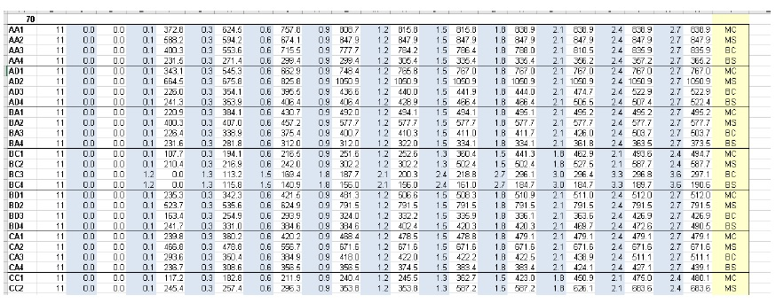RFDA was developed in parallel with a set of 1D damage functions from building surveys of structures in Edmonton and Calgary, AB in 2014. Curves for building replacement/repair and contents damage were developed separately. Residential curves for main floor and basement were developed separately.
During a model run, RFDA applies a contents and structural curve to each asset, and the corresponding basement pair to those with ‘bsmt_f’=True.
To facilitate converting from RFDA inventories to CanFlood format, two tools are provided:
Inventory converter; and
Damage Curve converter.
Inventory Conversion
The RFDA Inventory Conversion requires a point vector layer as an input 3. For Residential Inventories (those with struct_type not beginning with ‘S’), each asset is assigned a f0_tag with an ‘_M’ suffix to denote this as a main floor curve (e.g. BD_M) based on the concatenated ‘class’ and ‘struct_type’ values in the inventory. Using the ‘bsmt_f’ value, the f1_tag is also assigned with a ‘_B’ suffix. These suffixes correspond to the curve naming of the DamageCurves tool (described below). The f1_elv is assigned from: f0_elv – bsmt_ht.
For Commercial Inventories (those with struct_type beginning with ‘S’), the f0_tag and f1_tag fields are populated with the ‘struct_type’ and ‘class’ values separately. Where ‘bsmt_f’ = True, a third f2_tag=’ nrpUgPark’ is added to denote the presence of underground parking 4. Once converted, the user can start the CanFlood model building process.
DamageCurves Converter
This tool converts the RFDA format curves into a CanFlood curve set (one curve per tab). The following combinations of RFDA curves are constructed:
Individual (e.g. main floor contents)
Floor combined (e.g. main floor structural and contents)
Type combined (e.g. structural basement and mainfloor)
All combined
This allows the user to customize which curves are applied and how to each asset (with CanFlood’s ‘composite vulnerability function’ feature).
5.4.4. Add Styles¶
To augment the symbol styles packed in QGIS for modifying the display of vector layer features, CanFlood includes a small library of styles typical for GIS flood projects. This library is an .xml file in the plugin directory, and can be added to your style manager through the CanFlood menu as shown below:
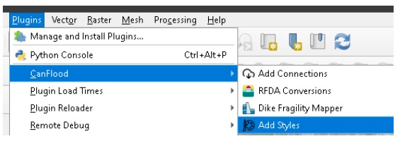Once executed, these symbols should be available for styling relevant vector layers through one of the QGIS layer styling dialogs. For example, the ‘CanFlood’ group can be accessed via the ‘Layer Styling’ pane (F7) as shown below:
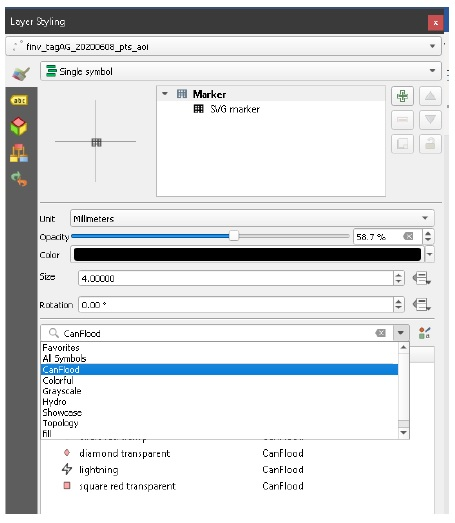The QGIS ‘Styling Manager’ 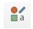 provides an interface for organizing and other tasks related to styles.
{kind=link}
6. Tutorials¶
This section provides a few tutorials to get a user started in CanFlood. It is suggested to work through the tutorials sequentially, referring to Section 5 when more detailed information is desired. For all tutorials, the project CRS can safely be set from any of the data layers, unless otherwise specified. Tutorials are written assuming users are familiar with QGIS and object-based flood risk modelling. All tutorial data can be found in the latest ‘tutorial_data’ zip on the project page.
6.1. Tutorial 1a: Risk (L1)¶
This tutorial guides the user through the simplest application of risk modelling in CanFlood, called a level 1 (L1) analysis, where only binary exposure is calculated. This ‘exposed vs. not exposed’ analysis can be useful for preliminary analysis where there is insufficient information to model more complex object vulnerability.
6.1.1. Load data to the project¶
Download the data layers for Tutorial 1:
haz_rast: hazard event rasters with WSL value predictions for the study area for four probabilities.
o haz_0050.tif
o haz_0100.tif
o haz_0200.tif
o haz_1000.tif
finv_tut1a.gpkg : flood asset inventory (’finv’) spatial layer.
Ensure your project’s CRS is set to ‘EPSG:3005’ 5 and load the downloaded layers into a new QGIS project 6. Your map canvas should look something like this:
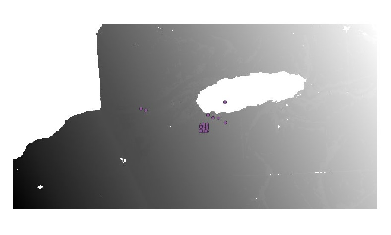Explore the flood asset inventory (‘finv’) layer’s attributes (F6). You should see something like this:
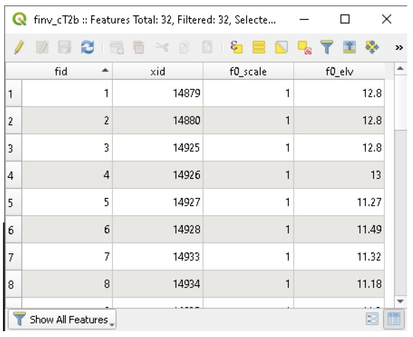The 4 fields are:
fid: built-in feature identifier (not used);
xid: Index FieldName, unique identifier for the asset 7;
f0_scale: value to scale the results of the ‘f0’ calculation for this asset;
f0_elv: height (above the project datum) at which the asset is vulnerable to flooding.
For this example, each inventory entry or ‘asset’ could represent a home with the main floor elevation entered into ‘f0_elv’. Any flood waters above this elevation will be tabulated as an impact for that asset. For CanFlood’s L1 analysis, based on the user supplied likelihood of each event, the total ‘risk of inundation’ for each asset and for the full study area will be computed.
6.1.2. Build the Model¶
Press the ‘Build’ button to begin building a CanFlood model.
Setup
On the ‘Setup’ tab, configure your ‘Build Session’ by first creating or selecting an easy to locate working directory using the ‘Browse’ button. CanFlood will place all the data files assembled with the ‘Build’ toolset in this directory. Ensure the remaining ‘Build Controls’ are specified as shown below.
Now use the lower portion of the dialog to specify the parameters CanFlood should use to assemble your new Control File as shown below.
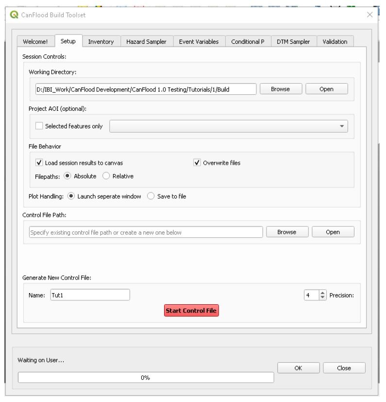Once the parameters are correctly entered, click ‘Start Control File’ to create your Control File in the working directory. There should be a message on the QGIS Toolbar indicating the process ran successfully.
If you view the ‘CanFlood’ Log Messages Tab (View > Panels > Log Messages), you can see the log messages for the process you just completed. It should look something like this:
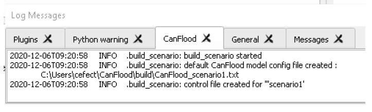Back in CanFlood’s ‘Setup’ tab, next to the working directory file path, click ‘Open’ to open the specified working directory, you should see the Control File ‘CanFlood_Tut1.txt’ created in your working directory. Open the control file. This is a template with some blank, default, and specified parameters. As you work through the remainder of ‘Build’ section of this tutorial, blank parameters will be filled in by the CanFlood tools. Notice the ‘#’ comment letting you know how and when this control file was created. ‘#’ comment lines are ignored by the program when reading from the control file, and are written by some tools to help the user track actions taken by CanFlood on the control file.
Store Inventory
Move to the ‘Inventory’ tab. Under the Inventory Compiler section, select the inventory layer (finv_tut1a) and ensure ‘elevation type’ is set to ‘datum’ to reflect that the inventory’s ‘f0_elv’ values are measured from the project’s datum (rather than ground). Now select the inventory vector layer and the appropriate ‘Index FieldName’ as shown, then click ‘Store’.
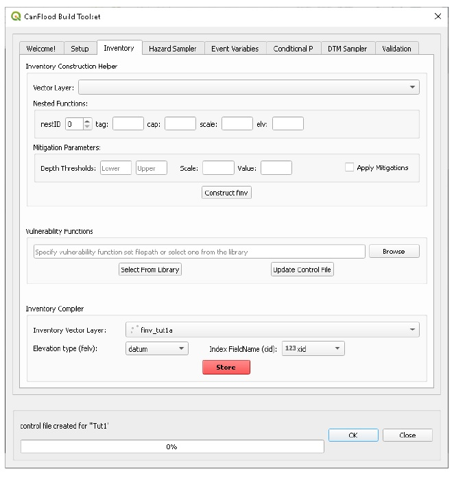You should see the inventory csv file stored into the working directory. This is a simplified version of the inventory layer with the spatial data removed. Open the Control File again. You should notice that asset inventory (‘finv’) parameter has been populated with the file name of the newly created csv.
Hazard Sampler
Move to the ‘Hazard Sampler’ tab. Check all the hazard rasters in the display box as shown 8, leaving the remaining parameters blank or untouched:
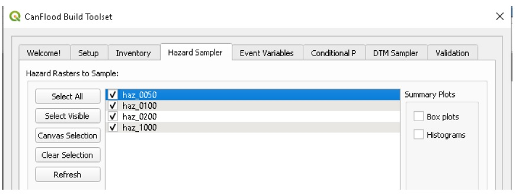Click ‘Sample Rasters’ to generate the exposure (‘expos’) dataset. You should see a new csv file in the working directory, and its filepath added to the control file under ‘expos’. These are the WSLs sampled at each asset from each hazard event raster.
Event Variables
Now that the WSLs have been stored, we need to tell CanFlood what the probability of realizing each of these events is. Move to the ‘Event Variables’ tab. Specify the correct values for each event’s likelihood (from the event names) as shown:
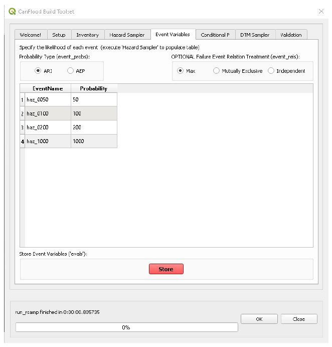Press ‘Store’. The event probabilities (‘evals’) dataset should have been created and its filepath written to the Control File under ‘evals’.
Validation
Move to the ‘Validation’ tab, check ‘Risk (L1)’, then click ‘Validate’. This will check all the inputs in the control file and set the ‘risk1’ validation flag to ‘True’ in the control file. Without this flag, the CanFlood model will fail.
The control file should now be fully built for an L1 analysis and the necessary inputs assembled. The completed control file should look similar to this (but with your directories):
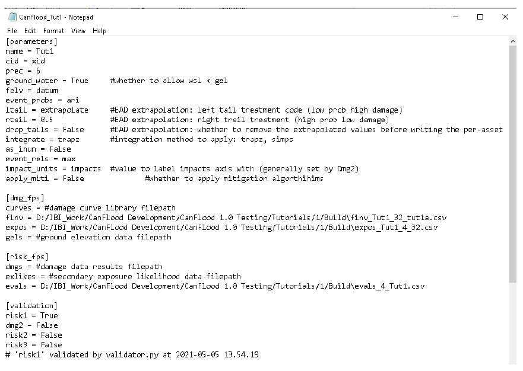6.1.3. Run the Model¶
Click the ‘Model’ button to launch the Model toolset dialog.
Setup
On the ‘Setup’ tab, select a working directory 9 where all your results will be stored. Also select your control file created in the previous section if necessary.
Your dialog should look like this 10:
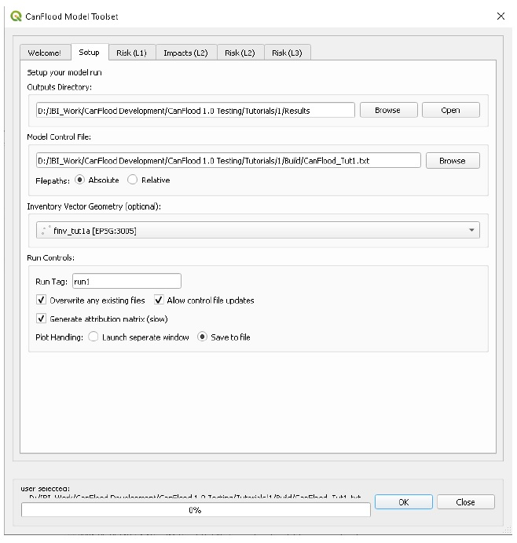Execute
Navigate to the ‘Risk (L1)’ tab. Check the first two boxes as shown below and press ‘Run risk1’:
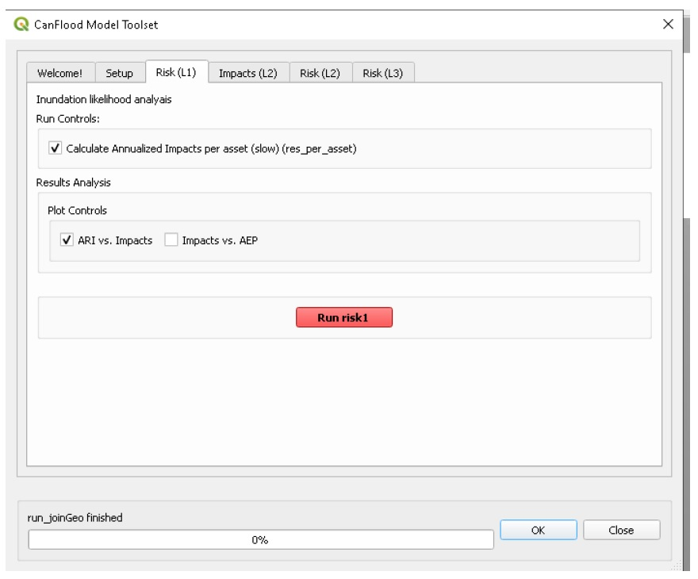6.1.4. View Results¶
Navigate to the selected working directory. You should see 3 files created:
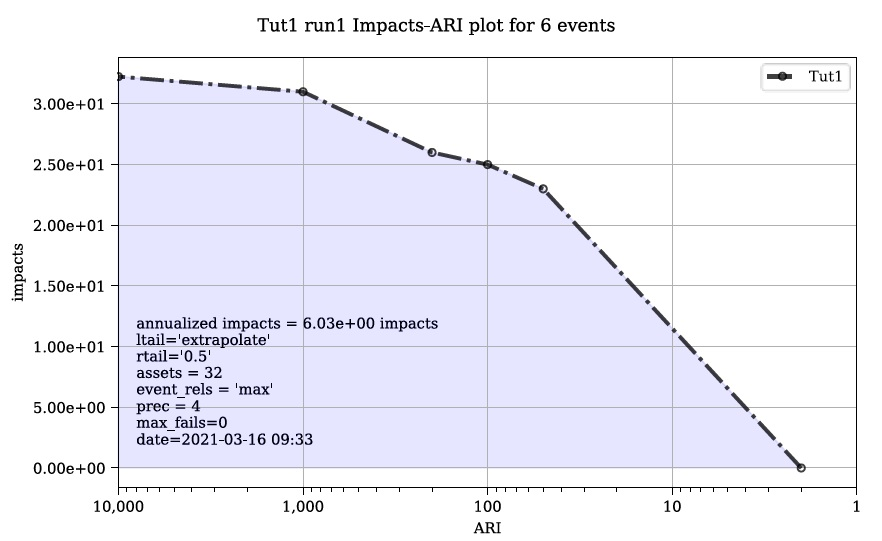
risk1_run1_tut1a_passet.csv: expected value of inundation per asset;
risk1_run1_tut1a_ttl.csv: total results, expected value of total inundation per event (and for all events);
tut1a.run1 Impact-ARI plot on 6 events.svg: a plot of the total results (see below).
These are the non-spatial results which are directly generated by CanFlood’s model routines. To facilitate more detailed analysis and visualization, CanFlood comes with a third and final ‘Results’ toolset.
Join Geometry
Open the results toolset by clicking the ‘Results’ button. The CanFlood models are designed to run independent of the QGIS spatial API. Therefore, if you would like to view the results spatially, additional actions are required to re-attach the tabular model results to the asset inventory (‘finv’) vector geometry. To do this, move to the ‘Join Geo’ tab, select the asset inventory (‘finv’) layer. Then select ‘r_passet’ under ‘results parameter to load’ to populate the field below with a filepath to your per-asset results file 11. Finally, select the ‘Results Layer Style’ and ‘Field re-label option’ as shown:
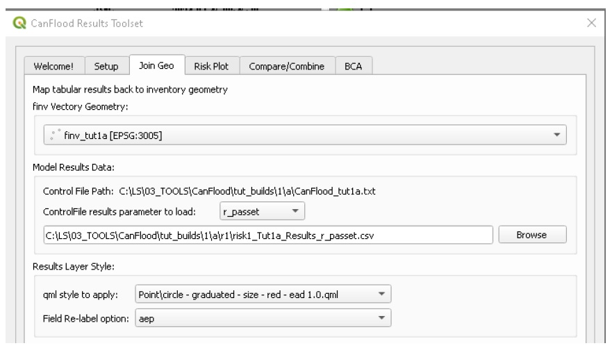Click ‘Join’. A new temporary ‘djoin’ layer should have been loaded onto the map canvas with the selected style applied. Move this layer to the top of your layers panel and turn off the original ‘finv’ layer to see the new ‘djoin’ layer. The ‘djoin’ layer should be a points layer where the size of each point is relative to the magnitude of the expected value of inundation (i.e. the average number of inundations per year) similar to this:
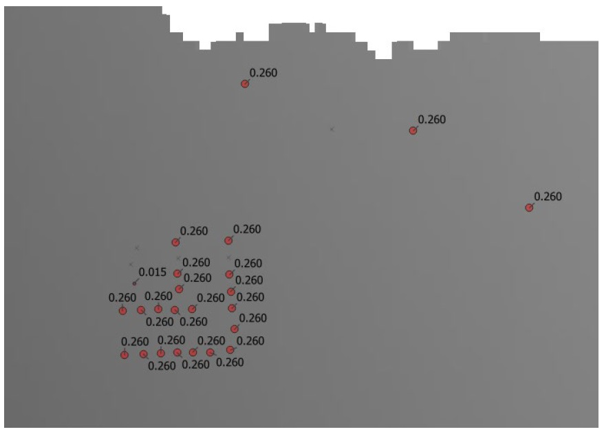Open the attributes table for the ‘djoin’ layer (F6). You should something similar to the below table:
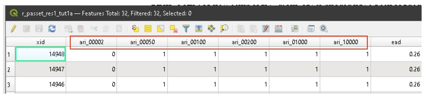Notice the six impact fields (boxed in red above) have had their names converted to ‘ari_probability’ and the field values provide the binary exposure (0=not exposed; 1=exposed) results. You’ll need to save this layer for it to be available in another QGIS session (Layers Pane > Right Click the layer > Save As…). Congratulations on your first CanFlood run!
6.2. Tutorial 2a: Risk (L2) with Simple Events¶
Tutorial 2 demonstrates the use of CanFlood’s ‘Risk (L2)’model (Section5.2.3). This emulates a more detailed risk assessment where the vulnerability of each asset is known and described as a function of flood depth (rather than simple binary flood presence as in tutorial 1). This tutorial also demonstrates an inventory with ‘relative’ heights and CanFlood’s ‘composite vulnerability function’ feature where multiple functions are applied to the same asset.
6.2.1. Load data to project¶
Download the tutorial 2 data from the ‘tutorials2data’ folder:
haz_rast: hazard event rasters with WSL value predictions for the study area for four probabilities.
o haz_0050.tif
o haz_0100.tif
o haz_0200.tif
o haz_1000.tif
finv_tut2.gpkg: flood asset inventory (’finv’) spatial layer
dtm_tut2.tif: digital terrain model raster with ground elevation predictions
haz_frast: companion failure event rasters(not used in tutorial 2a)
haz_fpoly: companion failure event polygons(not used in tutorial 2a)
Load these into a QGIS project, it should look something like this:
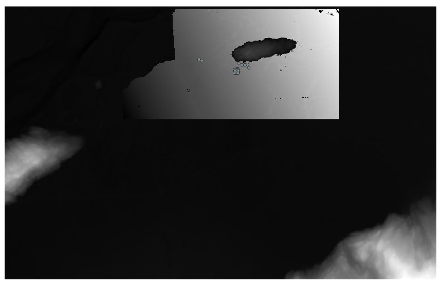6.2.2. Build the Model¶
Scenario Setup
On the ‘Setup’ tab, configure the session as shown using your own paths, then click ‘Start Control File’:
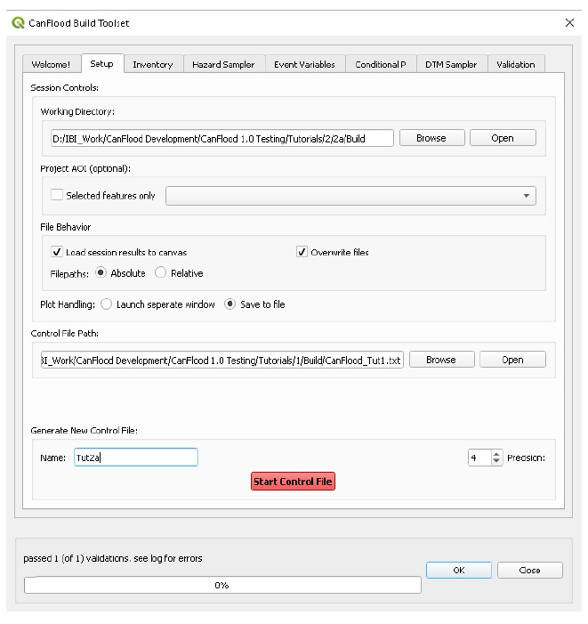Select Vulnerability Function Set
Move to the ‘Inventory’ tab and click ‘Select From Library’ to launch the library selection GUI shown below. Select the library ‘IBI_2015’ in the top left window then ‘IBI2015_DamageCurves.xls’ in the bottom left window, then click ‘Copy Set’ to copy this set of vulnerability functions into your working directory. The inventory provided in this tutorial has been constructed specifically for these ‘IBI2015’ functions. Generally, flood risk modellers must develop or supply their own vulnerability functions.
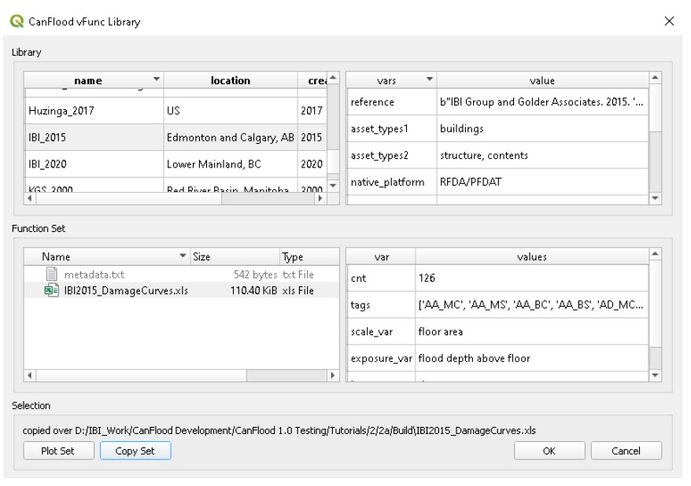Close the ‘vFunc Selection’ GUI, and you should now see the new .xls file path entered under ‘Vulnerability Functions’. Finally, click ‘Update Control File’ to store a reference to this vulnerability function set into the control file.
Inventory
On the same ‘Inventory’ tab, select the inventory vector layer, the appropriate Index FieldName, and set the elevation type to ‘ground’ as shown, then click ‘Store’.
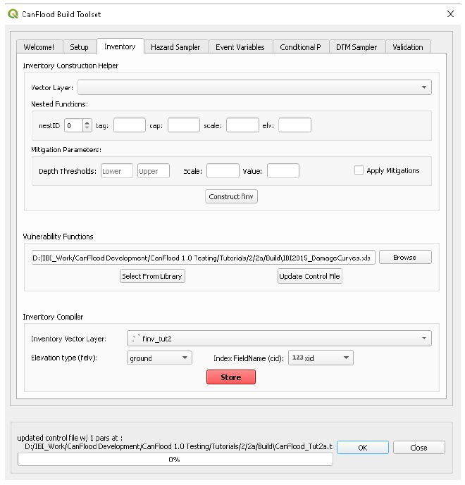You should see the inventory csv now stored in the working directory.
Hazard Sampler
Move to the ‘Hazard Sampler’ tab, ensure the four hazard rasters are shown in the window and all other fields are default, then click ‘Sample Rasters’. You should see the ‘expos’ data file created in the working directory.
Event Variables
Move to the ‘Event Variables’ tab, you should now see the 4 hazard events from the previous task populating the table. Fill in the ‘Probability’ values as shown (ignore the ‘Failure Event Relation’ setting for now), then click ‘Store’ to generate the event variables (‘evals’) dataset.
DTM Sampler
Move to the ‘DTM Sampler’ tab. Select the ‘dtm_tut2’ raster then click ‘Sample DTM’ to generate the ground elevation (‘gels’) dataset in your working directory and create a reference to it in the Control File.
Validation
Move to the ‘Validation’ tab, check the boxes for both L2 models, then click ‘Validate’. You should get a log message ‘passed 1 (of 2) validations. see log’. To investigate the failed validation attempt, open the Log Messages panel, it should look like this:
This shows that the Risk (L2) model is missing the ‘dmgs’ data file and will not run. This is expected behavior as CanFlood separates the exposure calculation (Impacts L2) from the risk calculation. We will calculate this ‘dmgs’ data file and validate for Risk (L2) in the next section. You’re now ready to run the Impacts (L2) model!
6.2.3. Run the Model¶
Open the ‘Model’ dialog. Configure the ‘Setup’ tab as shown below, selecting your own paths and control file, and ensuring the ‘Outputs Directory’ is a sub-directory of your previous ‘Working Directory’ 12:
Impact (L2)
Move to the ‘Impacts (L2)’ tab. Ensure the ‘Run Risk (L2)’ box is not checked (we’ll execute the risk model manually in the next step) but that ‘Output expanded component impacts’ is checked. Click ‘Run dmg2’.
This should create an impacts (‘dmgs’) datafile in your working directory and fill in the corresponding entry on the control file. Open this csv. It should look something like this:
These are the raw impacts per event per asset calculated with each vulnerability function, the sampled WSL and the sampled DTM elevation. The second output is the ‘expanded component impacts’, a large optional output background file used by CanFlood that contains the tabulation of each nested function and the applied scaling and cap values. See Section5.2.2 for more information. Now you’re ready to calculate flood risk!
Risk (L2)
Move to the ‘Risk (L2)’ tab. Check all the boxes shown below and click ‘Run risk2’.
A set of results files should have been generated (discussed below). For a complete description of the Risk (L2) module, see Section5.2.3.
6.2.4. View Results¶
After completing the Risk (L2) run, navigate to your working directory. It should now contain these files:
eventypes_run1_tut2a.csv: derived parameters for each raster;
risk2_run1_tut2a_r2_passet.csv: expected value per asset expanded Risk (L2) results;
risk2_run1_tut2a_ttl.csv: total expected value of all events and assets Risk (L2) results;
dmgs_tut2a_run1.csv: per asset Impacts (L2) results;
dmgs_expnd_tut2a_run1.csv: expanded component Impacts (L2) results;
run1 Impacts-ARI plot for 6 events.svg: see below.
Figure 6-1: Summary risk curve plot of the total Risk (L2) results.
Risk Plots
While the Risk modules include some basic risk curve plots (see above), CanFlood provides additional plot customization under the ‘Risk Plot’ tool in the ‘Results’ toolset. Open the ‘Results’ toolset, configure the session by selecting a working directory, the Control File, and setting ‘Plot Handling’ to ‘Save to file’ as shown:
To generate the custom plots, navigate to the ‘Risk Plot’ tab, and select both plot types as shown below:
To customize the plot, open the Control File, and under ‘[plotting]’, change the following parameters:
color = red
impactfmt_str = ,.0f
These parameters control the colour of the plot and the formatting applied to the impact values. Save the changes, then return to the CanFlood window and hit ‘Plot Total’. You should see the two plots below generated in your working directory.
These plots are the two standard risk curve formats for the same total results data. Alternatively, changing ‘Plot Handling’ to ‘Launch separate window’ on the ‘Setup’ tab will launch a dialog window after plotting that provides some built-in tools for further customizing the plot.
6.3. Tutorial 2b: Risk (L2) with Dike Failure¶
Users should first complete Tutorials 1 and 2a. Tutorial 2b uses the same input data as 2a but expands the analysis to demonstrate the risk analysis of a simple levee failure through incorporating a single companion failure event into the model. This companion failure event is composed of two layers:
haz_1000_fail_B_tut2: ‘failure raster’ indicating the WSL that would be realized were any of the levee segments to fail during the event; and
haz_1000_fail_B_tut2: conditional exposure probability polygon layer with features indicating the extent and probability of failure of each levee segment during the flood event (‘failure polygons’). Notice this layer contains two features that overlap in places, corresponding potential flooding from two breach sites in the levee system. This layer will be used to tell CanFlood when and how to sample the failure raster.
This simplification by using these two layers facilitates the specification of multiple failure probabilities but where any failure (or combination of failures) would realize the same WSL (Section5.1.5’s ‘complex conditionals’). Ensure these layers are loaded into the same QGIS project as was used for Tutorial 2a.
To better understand the ‘failure polygons’ layer, let’s apply CanFlood’s ‘red fill transparent’ style. Begin by loading this style template into your profile with the ‘Add Styles’ tool (Plugins > CanFlood > Add Styles), then apply it using the Layer Styling Panel (F7). Finally, add a single label for ‘p_fail’ and move the layer just beneath the asset inventory (‘finv’) points layer on the layers panel. Your canvas should look similar to the below:
6.3.1. Build the Model¶
Follow the steps in Tutorials 2a ‘Build the Model’ but with including the ‘failure raster’ (‘haz_1000_fail_A_tut2’, probability=1000ARI) in the ‘Hazard Sampler’ and ‘Event Variables’ steps. On the ‘Event Variables’ step, ensure ‘Failure Event Relation Treatment’ is set to ‘Mutually Exclusive’.
Conditional Probabilities
Navigate to the ‘Conditional P’ tab to resolve the overlapping failure polygons into the resolved exposure probabilities (“exlikes”) dataset to tell CanFlood what probability should be assigned to each asset when realizing the companion failure raster. Start by pairing the failure polygons with the failure raster, select the ‘Probability FieldName’, ‘Event Relation Treatment’, and ‘Summary Plots’ as shown, then click ‘Sample’:
A resolved exposure probabilities (‘exlikes’) data file should have been created in your working directory with entries like this:
Two non-spatial summary plots of this data should also have been generated in your working directory, the most useful for this particular model being the histogram:
These values are the conditional probabilities of each asset realizing the 1000-year companion failure event WSL. 13 See Section5.2.3 for a complete description of this tool. Complete the model construction by running the ‘DTM Sampler’ and ‘Validation’ tools.
6.3.2. Run the Model¶
Open the ‘Model’ dialog and setup your session similar to Tutorial 2a but ensure ‘Generate attribution matrix’ is checked under ‘Run Controls’ (we’ll use this to make plots showing the different components that contribute to the risk totals).
Impacts and Risk
Navigate to the ‘Impacts (L2)’ tab, check the ‘Run Risk (L2) upon completion’ box to execute the exposure and risk models in sequence from your Control File. Navigate to the ‘Risk (L2)’ tab and ensure ‘Calculate expected values per asset’ is checked. Now move back to the ‘Impacts (L2)’ tab and click ‘Run dmg2’. You should see the same types of outputs as Tutorial 2a, but with two additional ‘attribution matrix’ datasets.
6.3.3. View Results¶
To better understand the influence of incorporating levee failure, this section will demonstrate how to generate a plot showing the total risk and the portion of that total risk that comes from assuming no failure. Open the ‘Results’ toolset and configure your session by selecting a working directory and the same Control File used above. Now navigate to the ‘Risk Plot’ tab, ensure both plot controls are checked, then click ‘Plot Fail Split’. This should generate two risk plot formulations, including the figure below:
In this plot, the red line represents the contribution to risk without the companion failure events, which should be nearly identical to the results from Tutorial 2a, and a second line showing the total results. 14 The area between these two lines illustrates the contribution to risk from incorporating levee failure into the model.
6.4. Tutorial 2c: Risk (L2) with Complex Failure¶
It is recommended that users first complete Tutorial 2b. Tutorial 2c uses the same input data as 2b but expands the analysis to demonstrate the incorporation of more complex levee failure with two companion failure events into the model.
In the same QGIS project as was used for Tutorial 2a, ensure the following are also added to the project:
haz_1000_fail_B_tut2.gpkg: failure polygon ‘B’;
haz_1000_fail_B_tut2.tif: failure raster ‘B’.
These layers represent an additional companion failure event ‘B’ for the 1000-year event where the failure WSL and probabilities are different but complimentary from those of Tutorial 2b’s companion failure event ‘A’. These could be outputs from two modelled breach scenarios.
6.4.1. Build the Model¶
Follow the steps in Tutorials 2b ‘Build the Model’ but with including the additional companion failure event ‘B’ in the ‘Hazard Sampler’, ‘Event Variables’ and ‘Conditional P’ steps. For the latter two, ensure both event relation treatments are set to ‘Mutually Exclusive’. Looking at the ‘Conditional P’ boxplot shows the difference in failure probabilities specified by the two companion failure events:
Complete the model construction by running the ‘DTM Sampler’ and ‘Validation’ tools.
6.4.2. Run the Model¶
Open the ‘Model’ dialog and follow the steps in Tutorial 2b to setup this model run.
Impacts and Risk
Execute the ‘Impacts (L2)’ and ‘Risk (L2)’ models similar to Tutorial 2b but ensure ‘Generate attribution matrix’ is de-selected.
To explore the influence of the ‘event_rels’ parameter, open the control file, change the ‘event_rels’ parameter to ‘max’, change the ‘name’ parameter to something unique (e.g., ‘tut2c_max’), then save the file with a different name. On the ‘Setup’ tab, point to this modified control file, a new outputs directory, and run both models again as described above 15.
6.4.3. View Results¶
After executing the ‘Risk (L2)’ model for the ‘event_rels=mutEx’ and ‘event_rels=max’ control files, two similar collections of output files should have been generated in the two separate output directories specified during model setup. To visualize the difference between these two model configurations, open the ‘Results’ toolset and select a working directory and the original ‘event_rels=mutEx’ control file as the ‘main control file’ on the ‘Setup’ tab 16. Before generating the comparison files, configure the plot style by opening the same main control file, and changing the following ‘[plotting]’ parameters:
‘color = red’
‘linestyle = solid’
‘impactfmt_str = ,.0f’
To generate a comparison plot of these two scenarios, navigate to the ‘Compare/Combine’ tab, select the ‘Control File’ for both model configurations generated in the previous step, ensure ‘Control Files’ is checked under ‘Comparison Controls’, as shown below:
Click ‘Compare’ to perform the comparison. You should see two files generated in your working directory:
Comparison plot showing both risk curves on the same axis; and
Control file comparison spreadsheet.
The control file comparison spreadsheet is shown below and is an easy way to quickly identify distinctions between model scenarios.
On the comparison plot (shown below), notice the difference in the risk curves and annualized values is negligible, indicating the treatment of event relations is not very significant for this model.
Re-running the comparison tool on the four Tutorial 2 control files constructed thus far yields the following:
6.5. Tutorial 2d: Risk (L2) with Mitigation¶
It is recommended that users first complete Tutorial 2a before proceeding. Tutorial 2d uses the same input data as 2a but expands the analysis to demonstrate the incorporation of object (or property) level mitigation measures (PLPM) into the model. This can be useful for improving the accuracy of a model where two assets are functionally similar, using the same vulnerability function, but where one has some mechanism to reduce the exposure of the asset (e.g., a backflow valve). Similarly, this functionality can be used to investigate the benefits of introducing PLPMs with a comparative analysis.
6.5.1. Build the Model¶
Follow the steps in Tutorials 2a ‘Build the Model’, with the exception of the ‘Inventory’ step, which we’ll modify to apply four new fields to the inventory vector layer (‘finv’) by configuring the ‘Inventory’ tab as shown below before clicking ‘Construct finv’:
This should create a new layer with a ‘finv’ prefix in your map canvas. Exploring the attribute table of this layer (F6) should show the four new fields that were created and filled with the values specified. These are used by the ‘Impacts (L2)’ module to modify the exposure passed to each objects vulnerability function and are described in Section5.2.2. Complete the inventory construction by ensuring ‘Apply Mitigations’ is checked, the newly created inventory vector layer is selected, and the remainder of the tab is configured as shown below (same as Tutorial 2a). Click ‘Store’.
Complete the ‘Hazard Sampler’, ‘Event Variables’, ‘DTM Sampler’, and ‘Validation’ steps as described in Tutorial 2a.
6.5.2. Run the Model¶
Open the ‘Model’ dialog and setup your session similar to Tutorial 2a.
Impacts and Risk
Navigate to the ‘Impacts (L2)’ tab and ensure ALL ‘Run Controls’ are checked then click ‘Run dmg2’. You should see the same types of outputs as Tutorial 2a, but with some additional outputs that will help us understand the influence of the mitigation parameters, including the box plot shown below:
This shows data summaries for the four event rasters, the total impact values (in red text), and some key model info.
To understand the effect of the mitigation parameters, open the control file, change the ‘apply_miti’ parameter to ‘False’, change the ‘name’ parameter to ‘tut2d_noMiti’, ‘color’ to ‘red’, and save it under a different name. On the ‘Setup’ tab, point to this new control file and change the ‘Run Tag’ to ‘noMiti’. Now move back to the ‘Impacts (L2)’ tab and click ‘Run dmg2’ again. You should see another boxplot generated in your working directory:
Notice the smaller events (50yr and 100yr) have changed significantly, while the larger events less-so. This makes sense considering we told CanFlood the mitigations would be overwhelmed at depths above 0.2 m (via the upper depth threshold parameter). We can investigate this model behavior further by opening either 17 of the ‘depths_’ outputs, which should look similar to the below (values below the upper threshold are highlighted in red for clarity):
Similarly, the ‘dmg2_smry’ spreadsheet ‘_smry’ tab for the mitigation run shows the change in total impact values (per event) calculated at each step of the ‘Impacts (L2)’ module (bars and arrow added for clarity):
This shows the total impacts achieved by the raw curves, then the ‘scaling’ algorithm (‘fX_scale’) the ‘capping’ algorithm (‘fX_cap’), followed by the algorithm that enforced the lower threshold (‘mi_Lthresh’), the mitigation scaling (‘mi_iScale’), the mitigation value addition (‘mi_iVal’), and the final result (identical to the previous row). This progression shows that the ‘capping’ algorithm had a large influence on the results and the mitigation value addition (‘mi_iVal’) had negligible influence.
6.5.3. View the Results¶
The ‘Compare’ Results tool can be used to show the influence on the risk curve and total risk:
6.6. Tutorial 2e: Benefit-Cost Analysis¶
This tutorial demonstrates CanFlood’s Benefit-Cost Analysis (BCA) tools for supporting basic benefit-cost analysis for flood risk interventions like the mitigations considered in the previous tutorial. Before continuing with this tutorial, users should have completed and have available the results data for Tutorial 2a 18 and 2d:
CanFlood_tut2a.txt: control file from Tutorial 2a with valid total results (‘r_ttl’) file and filepath;
CanFlood_tut2d.txt: control file from Tutorial 2d with valid total results (‘r_ttl’) file filepath.
Begin by opening the ‘Results’ toolbox then navigating to the ‘Setup’ tab to configure it using the control file from Tutorial 2d. Now we’ll generate a test plot to make sure our control files are valid. Ensure the ‘impactfmt_str’ parameter is set to ‘,.0f’ (no apostrophes) in the Tutorial 2d control file. Now move to the ‘Compare/Combine’ tab, enter in both control files, check one of the ‘Plot Controls’, then click ‘Compare’. A plot identical to the one generated at the end of Tutorial 2d should have been generated. Note the EAD of Tutorial 2d is ~57,000. This is the residual annual flood risk for these assets, after the PLPM intervention.
Complete BCA Workbook
Navigate to the ‘BCA’ tab. Ensure the control file path for Tutorial 2d is shown at the top of the window, then click ‘Copy BCA Template’. You should see a new ‘cba_xls’ parameter set in the control file and your ‘BCA’ window should look similar to the below:
Now click ‘Open’ to edit the BCA workbook. You should see the ‘smry’ tab populated with information from Tutorial 2d, most notably the $57k EAD calculated for this option. Complete the remaining input cells on the ‘smry’ tab by specifying the EAD from 2a and a 4% discounting rate as shown below:
Now move to the ‘data’ tab on the workbook to enter in the benefit-cost data of pursuing the Tutorial 2d mitigations. For this tutorial, assume we have determined the following for this intervention:
Installation of the PLPMs will take 2 years at $1M/year and provide protection for 100 years;
Maintenance will cost $1k/year beginning once construction completes and continue for the 100-year lifecycle of the intervention;
There will be no change in relative benefits or maintenance costs over time.
The two EAD rows on the ‘data’ tab should be automatically populated based on the values specified on the ‘smry’ tab; however, to match the assumptions above we must adjust some of these values as shown in the first six-years of the ‘data’ tab:
Notice the first year of the ‘baseline’ and ‘option’ EAD are blank, reflecting that no benefits are gained yet; however, the second year shows half the benefits will be realized. The $1000/year maintenance costs should extend through the full 100 years (i.e., copy/paste onto all rightward cells — not shown).
Once the ‘data’ tab is complete, a ‘B/C ratio’ of 1.18 should be shown on the ‘smry’ tab 19. Save and close this spreadsheet.
Plot Financials
To further summarize and analyze the data entered into the BCA worksheet (make sure to hit save!), move back to the CanFlood ‘BCA’ window, select ‘Future Values’, and click ‘Plot Financials’. The plot shown below should be generated:
This shows the relative values of the cumulative benefits and costs over time (without discounting). Notice the expensive installation costs exceed the benefits initially; however, after ~25 years the benefits of this option outweigh the costs (the ‘pay-back year’). Also notice that, with future values, the plot shows cumulative benefits around $10M at 100 years. Perhaps by then we will all be living in spaceships… so maybe it’s best not to consider such far-off benefits of flood mitigation so significantly.
Change the radio button to ‘Present Values’ and click ‘Plot Financials’ again. You should see a plot like the below:
Notice the ‘B/C ratio’ and the ‘pay-back year’ have not changed, but the plot now shows the costs and benefits decaying with time, reflecting the application of the discount rate.
To better understand the role of the discount rate, return to the worksheet, change the discount rate to 8%, save the worksheet, and in the CanFlood window click ‘Plot Financials’ again:
Notice the ‘payback year’ has not changed, but the relative size of the positive (green) and negative (red) areas has shifted and the ‘B/C ratio’ has dropped below 1. This reflects the more severe discounting of the future benefits brought by the larger 8% discount rate. In other words, by the time the future residents of the study area accrue significant benefits from the PLPMs, the current stakeholders wish they had spent the money on something else.
6.7. Tutorial 3: Risk (L3) SOFDA research model¶
Sample inputs for the SOFDA research model are provided in the tutorials3folder. Refer to Appendix B for more information.
6.8. Tutorial 4a: Risk (L1) with Percent Inundation (Polygons)¶
This tutorial demonstrates a risk analysis of polygon type assets where the impact metric is percent inundated rather than depth. This can be useful for some coarse risk modelling, or for assets like agricultural fields where the loss can reasonably be calculated from the percent of the asset that is inundated.
Load the following data layers from the ‘tutorials4data’ folder:
haz_rast: hazard event rasters with WSL value predictions for the study area for four probabilities.
o haz_0050_tut4.tif
o haz_0100_tut4.tif
o haz_0200_tut4.tif
o haz_1000_tut4.tif
dtm_cT2.tif: DTM layer (and corresponding stylized layer definition .qlr file)
finv_tut4a_polygons.gpkg: flood asset inventory (’finv’) spatial layer
finv_tut4b_lines.gpkg:(used in tutorial 4b)
Move the polygon inventory (‘finv’) layer to the top, apply the CanFlood ‘fill transparent blue’ style 20, and your project should look similar to this 21:
6.8.1. Build the Model¶
Setup
Launch the CanFlood ‘Build’ toolset and navigate to the ‘Setup’ tab. Set the ‘Precision’ field 22 to ‘6’, then complete the typical setup as instructed in Tutorial 1a.
Inventory
Navigate to the ‘Inventory’ tab, ensure ‘Elevation type’ is set to ‘datum’ 23 then click ‘Store’.
Hazard Sampler
Navigate to the ‘Hazard Sampler’ tool, load the four hazard rasters into the dialog window, check ‘Box plots’, check ‘Exposure as Inundation%’, set the ‘Depth Threshold’ to 0.5, and select the DTM layer as shown:
Click ‘Sample Rasters’. Navigate to the exposure data file (‘expos’) this created in your working directory. You should see a table like this:
These values are the calculated percent of each polygon with inundation greater than the specified depth threshold (0.5m). The generated box plots show this data graphically:
Event Variables and Validation
Run the ‘Event Variables’ and ‘Validation’ tools as instructed in Tutorial 1a.
6.8.2. Run the Model¶
Open the ‘Model’ dialog and follow the steps in Tutorial 1a to setup this model run. Navigate to the ‘Risk (L1)’ tool, check the boxes shown, and click ‘Run risk1’:
The set of results files discussed below should have been generated.
6.8.3. View the Results¶
Navigate to your working directory. You should see the following results files have been generated:
risk1_run1_tut4_passet.csv: per asset results
risk1_run1_tut4_ttl.csv
tut4a run1 AEP-Impacts plot for 6 events.svg
tut4a run1 Impacts-ARI plot for 6 events.svg
Open the per-asset results (‘passet’) data file, it should look like this:
The first non-index columns are simply the inundation percentage (from the ‘expos’ data file) multiplied by the asset scale attribute (from the ‘finv’ data file). The final ‘ead’ column is the expected value of these four columns.
To visualize this, open the ‘Results’ toolbox and configure the ‘Setup’ tab by selecting the control file. Navigate to the ‘Join Geo’ tab and configure it as shown below:
Click ‘Join’. You should see a new polygon vector layer loaded in your canvas with a red graduated style and labels applied to the EAD results calculated in the previous step:
6.9. Tutorial 4b: Risk (L1) with Percent Inundation (Lines)¶
Like Tutorial 4a, this tutorial demonstrates a risk analysis where the impact metric is percent inundated, but with line geometries rather than polygons. This can be useful for the analysis of flood risk to linear assets like roads.
Load the same data layers from the ‘tutorials4data’ folder, with the addition of:
finv_tut4b_lines.gpkg
Follow all the steps described in Tutorial 4a, but with this new asset inventory (‘finv’) layer.
The per-asset results should look like this:
The first non-index ‘impact’ columns represent hazard events, with values showing the percent inundation of each segment multiplied by its ‘f0_scale’ value. This could represent the meters inundated (above the 0.5m depth threshold) per segment, if the ‘f0_scale’ value is the segment length (as is the case with the tutorial inventory). Alternatively, the ‘f0_scale’ value could be set to ‘1.0’ for all features which would cause the values to simply reflect the % inundation of each segment (mirrors the output of the Hazard Sampler tool) and the last column would calculate the expected percent annual inundation of the segment.
6.10. Tutorial 5a: Risk (L1) from NPRI and GAR15¶
This tutorial demonstrates how to construct a CanFlood ‘Risk (L1)’ model from two web-sources:
For more information on these data sets, see Appendix A.
Because this tutorial deals with data having disparate CRSs, users should be familiar with QGIS’s native handling of project and layer CRS discussed here.
6.10.1. Load Data to Project¶
Begin by setting your QGIS project’s CRS to ‘EPSG:3978’ (Project > Properties > CRS > select ‘EPSG:3978’) 25. Now you are ready to download, then add, the data layer for Tutorial 5:
tut5_aoi_3978.gpkg: AOI polygon for tutorial.
Set the AOI’s layer style to ‘fill red transparent’ to allow you to see through the polygon. Before inventory construction can begin, we must add the NPRI and GAR15 raw data to the QGIS project. While there are many options for accessing and importing such data, this tutorial will demonstrate how to use CanFlood’s built-in ‘Add Connections’ feature (Section5.4.1) to first add a connection to the profile, then download the desired layers.
Connect to Web-Data
Begin by expanding the QGIS ‘Browser Panel’ (Ctrl + 2) then clicking ‘Refresh’ on the panel. It should similar to this:
This shows all the connections in your QGIS profile.
Next, execute ‘Add Connections’ (Plugins > CanFlood) to run a script that will attempt to add a set of additional connections to your profile. Your Log Messages should look like this:
This describes each of the connections that CanFlood added to your profile. To verify this, navigate back to the ‘Browser Panel’. You should see the following connections (under each connection type):
UNISDR_GAR15_GlobalRiskAssessment (WCS)
ECCC_NationalPollutantReleaseInventory_NPRI (ArcGIS Feature Service)
Note that these connections will remain in your profile for future QGIS sessions, meaning the ‘Add Connections’ tool should only be required once per profile 26.
Download NPRI Data
Now that the connections have been added to your profile, you are ready to download the layers. To limit the data request, ensure your map canvas roughly matches the extents of the AOI 27. Now open the QGIS ‘Data Source Manager’ (Ctrl + L) and select ‘ArcGIS Feature Server’. Select ‘ECCC_NationalPollutantReleaseInventory_NPRI’ from the dropdown under ‘Server Connections’. Click ‘Connect’ to display the layers available on the server. Select layer 3 ‘Reported releases to surface water for 2019’, check ‘Only request features…’, then click ‘Add’ to add the layer to the project as shown in the following:
You should now see a vector points layer added to your project with information on each facility reported to the NPRI (within your canvas view). Take note this layer’s CRS is EPSG:3978 (right click the layer in the ‘Layers’ panel > Properties > Information > CRS), this should match your QGIS project and the AOI.
Download GAR15 Data
Follow a similar process to download 28 the following layers from ‘UNISDR_GAR15_GlobalRiskAssessment’ under the ‘WCS’ tab as shown below:
GAR2015:flood_hazard_200_yrp
GAR2015:flood_hazard_100_yrp
GAR2015:flood_hazard_25_yrp
GAR2015:flood_hazard_500_yrp
GAR2015:flood_hazard_1000_yrp
You’ll have to load one layer at a time, and you may be prompted to ‘Select Transformation’ 29. Once finished, your canvas should look like this:
6.10.2. Build the Model¶
This section describes how to complete the construction of a Risk (L1) model from the downloaded NPRI and GAR15 data. For instructions on the remainder of the Risk (L1) modelling process, see Section6.1.
Setup
Follow the instructions in Section6.1.2 Setup; however, ensure ‘tut5_aoi_3978’ is selected under ‘Project AOI’ and ‘Load session results…’ is selected.
Construct and Store Inventory
Navigate to the ‘Inventory’ tab. To convert the downloaded NPRI data into an L1 inventory layer that CanFlood will recognize, we need to add ‘elv’ and ‘scale’ fields and values. For this simple analysis, we assume each asset has a vulnerability height of zero (i.e., any positive flood depth leads to exposure). This assumption is accomplished in CanFlood by setting ‘felv’= ‘datum’ and setting each ‘f0_elv’=0 (and using depth rather than WSL rasters). Using the Vector Layer drop down, select the NPRI layer and ensure the ‘nestID’, ‘scale’, and ‘elv’ fields match what is shown below. Finally, click ‘Construct finv’ to build the new inventory layer. To generate the asset inventory (‘finv’) csv file, ensure this new layer is selected in the ‘Inventory Vector Layer’ drop down. Now configure the ‘felv’ and ‘cid’ parameters as shown below, then click ‘Store’:
Hazard Sampler
Now you’re ready to sample the GAR15 hazard layers with your new NPRI inventory. Unlike the hazard layers used in previous tutorials, the GAR15 hazard layers provide depth (rather than WSL) data in centimeters (rather than meters) in a coordinate system other than that of our project. Further, these hazard layers’ extents are much larger than what is needed by our project; and because they are web-layers, many of the QGIS processing tools will not work. Therefore, we’ll need to apply the four ‘Raster Preparation’ tools described in Table 5-2 before proceeding with the ‘Hazard Sampler’.
Navigate to the ‘Hazard Sampler’ tab, ensure the five GAR2015 layers are listed in the window, and click ‘Sample’. You should get an error telling you the layer CRS does not match that of the project. To resolve this, configure the Raster Preparation handles as shown and click ‘Prep’:
You should see five new rasters loaded to your canvas (with a ‘prepd’ suffix). These layers should have rotated pixels, be clipped to the AOI, have reasonable flood depth values (in meters), and have the same CRS as the project 30. Further, each of these rasters should be saved to your working directory. This new set of hazard layers should conform to the expectations of the Hazard Sampler, allowing you to proceed with construction of an L1 model as described in Section6.1.
6.11. Tutorial 6a: Dike Failure Polygons¶
This tutorial demonstrates how to generate ‘failure polygons’ from typical dike information using CanFlood’s ‘Dike Fragility Mapper’ tool (Section5.4.1). Before following this tutorial, users should be familiar with the hazard event data types described in Section4.2 (esp. ‘failure polygons’) that are required of Risk (L1) and (L2) models with some failure. Begin by downloading the tutorial data from the tutorials6 folder and loading it into a new QGIS project:
hazard WSL event rasters (without failure)
o 0010_noFail.tif
o 0050_noFail.tif
o 0200_noFail.tif
o 1000_noFail.tif
dike_influence_zones.gpkg: Dike segment influence area layer with two polygon features, each corresponding to the area of influence of some dike segments;
dikes.gpkg: Dike alignment polyline layer
dtm.tif: Digital Terrain Model (import ‘dtm.qlr’ to get the styled version);
dike_fragility_20210201.xls: Dike fragility function library.
See Section4.5 for a description of these datasets. Ensure your project CRS is set to ‘EPSG:3005’. Once the GIS layers are loaded, your map canvas should look similar to the below:
To make this workspace more friendly, ensure the ‘dikes’ and ‘dike_influence_zones’ layers are at the top of the layers panel. Now apply the following CanFlood styles 31 to each of these layers:
dikes: ‘arrow black’
dike_influence_zones: ‘fill red transparent’
The arrow style is useful as we’ll need to know the directionality of the dike layer to tell the tool which side of the dike to sample. Now we’re ready to open the ‘Dike Fragility Mapper’ dialog:
Configure your dialog similar to what is shown below but using your own directories (ensure ‘dikeID’ is set to ‘ID’):
6.11.1. Calculate Dike Exposure¶
This step will calculate the exposure, or freeboard, values of each dike segment. Navigate to the ‘Dike Exposure’ tab, click ‘Refresh’, then configure it as shown below, taking care to select the DTM layer in the drop-down, but not in the selection window:
Click ‘Get Exposure’. You should see 10 layers loaded under the ‘CanFlood.Dikes’ group:
{kind=link}
{kind=link}
{kind=link}
These layer types are explained in Section6.11, and those relevant to the 200-year series are displayed below. The 40 m dike sample length and 200 m transect length we specified in the dialog box can be seen in the spacing and length of the transects shown below:
At its core, this tool samples the WSL raster at the tail of each transect and the DTM at the head, then compares these to calculate the freeboard. This suggests the user must specify an appropriate transect side, sample length, and transect length based on the configuration of diking and flooding to obtain an accurate freeboard calculation.
To visualize the calculated freeboard values, apply ‘Single Labels’ for the ‘sid’ values on the processed dikes layer, then navigate to your working directory and open the ‘tut6 dike 43-1 profiles.svg’ image file. It should look similar to the below:
This is a profile plot of dike 43, segment 1 (sid=4301) showing the calculated crest elevation and WSL for the four event rasters (sampled with each transect). Note that, this plot suggests the freeboard of the 50-year to be around -0.2 m (see red circle above). Now open the ‘tut6_dExpo_7_3.csv’ file in the working directory, this is the dike segment exposure (‘dexpo’) dataset that we’ll use in the next step to calculate failure probabilities. Notice the freeboard value of the segment-event in question is -0.2m as expected:
6.11.2. Calculate Dike Vulnerability¶
This step will use the previously calculated freeboard values and the user supplied fragility curves to calculate the probability of failure of each segment. Switch to the ‘Dike Vulnerability’ tab, you should see the filepath to the above exposure results automatically populated in the ‘dexpo_fp’ field. Now select the fragility curves library ‘dike_fragility_20210201.xls’ file provided with the tutorial data. The tab-names in this workbook correspond to ‘f0_dtag’ field on the dikes layer, telling CanFlood which curve to apply to which segment. Choose ‘None’ for the length effect corrections. Your dialog should look similar to this:
Now click ‘Calc Fragility’ to generate the tabular failure probability data (‘pfail’).
6.11.3. Join to Areas¶
In this final step, we will join the previously calculated failure probabilities to the user supplied influence areas for each segment based on the links provided on the dikes layer. Navigate to the ‘Join Areas’ tab. You should see the ‘pfail’ data filepath in the corresponding field; if not, navigate to this file. If you successfully ran the ‘Dike Exposure’ tool this session, you should see the first column of raster layers selected; if not, select the four WSL rasters manually in the first column. For the second column, select the ‘dike_influence_zone’ polygon layer in the first drop-down, then click ‘Fill Down’ to populate the remaining drop-downs. Once finished, your dialog should look like the below:
Click ‘Map pFail’. You should see four polygon layers loaded to your canvas, one for each event. Move these layers up on the layers list so they display on top of the rasters. The 200-year is shown below:
These results layers are automatically stylized as failure polygons, showing the event raster name, source dike segment (‘sid’), and failure probability of each feature. Notice the 200-year contains 3-overlapping polygon features corresponding to the three segments with failure here, despite the original ‘dike_influznce_zones’ layer having two features. This mapping of polygons to dike segments is set on the dikes layer in the ‘Influence Area ID Field’ specified on the ‘Setup’ tab (‘ifzID’ in this case). In this way, 1:1 or many:many segment-polygon links can be specified, allowing the user to map each breach probability, or group segments to apply the calculated probabilities to a larger dike ring. See Section5.4.1 for more information on this tool.
References¶
Bedford, T., and Roger M. Cooke. 2001. Probabilistic Risk Analysis: Foundations and Methods. Cambridge, UK ; New York, NY, USA: Cambridge University Press.
Bryant, Seth. 2019. “Accumulating Flood Risk.” University of Alberta. https://era.library.ualberta.ca/items/1e033c0d-6c4c-4749-9195-e46ce9eb3e2b.
Farber, Daniel A. 2016. “Discount Rates and Infrastructure Safety: Implications of the New Economic Learning.” In Risk Analysis of Natural Hazards, edited by Paolo Gardoni, Colleen Murphy, and Arden Rowell, 43–57. Cham: Springer International Publishing. https://doi.org/10.1007/978-3-319-22126-7_4.
FEMA. 2012. “Multi-Hazard Loss Estimation Methodology, Flood Model: Hazus-MH MR2 Technical Manual.” FEMA Washington, DC. https://www.fema.gov/media-library-data/20130726-1820-25045-8292/hzmh2_1_fl_tm.pdf.
Frechette, Jean-Denis. 2016. “Estimate of the Average Annual Cost for Disaster Financial Assistance Arrangements Due to Weather Events.”
Hosein, Adam. 2016. “Deontology and Natural Hazards.” In Risk Analysis of Natural Hazards, edited by Paolo Gardoni, Colleen Murphy, and Arden Rowell, 137–53. Cham: Springer International Publishing. https://doi.org/10.1007/978-3-319-22126-7_9.
IBI Group and Golder Associates. 2015. “Provincial Flood Damage Assessment Study.” Government of Alberta. https://open.alberta.ca/publications/7032365.
IWR and USACE. 2017. “Principles of Risk Analysis for Water Resources.”
Merz, B., H. Kreibich, R. Schwarze, and A. Thieken. 2010. “Review Article ‘Assessment of Economic Flood Damage.’” Natural Hazards and Earth System Sciences 10 (8): 1697–1724. https://doi.org/10.5194/nhess-10-1697-2010.
Messner, Frank. 2007. “FLOODSite: Evaluating Flood Damages: Guidance and Recommendations on Principles and Methods.” T09-06–01. Helmholz Unweltforschungszentrum (UFZ). http://repository.tudelft.nl/view/hydro/uuid:5602db10-274c-40da-953f-34475ded1755/.
National Research Council. 2015. Tying Flood Insurance to Flood Risk for Low-Lying Structures in the Floodplain. National Academies Press.
O’Connell, P. E., and G. O’Donnell. 2014. “Towards Modelling Flood Protection Investment as a Coupled Human and Natural System.” Hydrology and Earth System Sciences 18 (1): 155–71. https://doi.org/10.5194/hess-18-155-2014.
Penning-Rowsell, Edmund, Sally Priest, Dennis Parker, Joe Morris, Sylvia Tunstall, Christophe Viavattene, John Chatterton, and Damon Owen. 2013. Flood and Coastal Erosion Risk Management - Manual. Routledge. https://www.mcm-online.co.uk/manual/.
Penning-Rowsell, Edmund, Sally Priest, Dennis Parker, and others. 2019. Flood and Coastal Erosion Risk Management - Handbook. 1st ed. Routledge. https://doi.org/10.4324/9780203066393.
Public Safety Canada. 2018. “Federal Flood Mapping Guidelines Series.” December 21, 2018. https://www.publicsafety.gc.ca/cnt/mrgnc-mngmnt/dsstr-prvntn-mtgtn/ndmp/fldpln-mppng-en.aspx.
Rudari, Roberto, and Francesco Silvestro. 2015. “IMPROVEMENT OF THE GLOBAL FLOOD MODEL FOR THE GAR 2015.” UNISDR. https://www.preventionweb.net/english/hyogo/gar/….
Sayers, Paul B., ed. 2012. Flood Risk: Planning, Design and Management of Flood Defence Infrastructure. London: ICE Publishing.
Smith, Nicky, Charlotte Brown, ., and Wendy Saunders. 2016. “Disaster Risk Management Decision-Making: Review.”
UNISDR, May. 2009. “UNISDR Terminology for Disaster Risk Reduction.”
URS. 2008. “Delta Risk Management Strategy (DRMS) Phase 1 - Levee Vulnerability - Final.” California Department of Water Resources.
USACE. 1996. “Risk-Based Analysis for Flood Damage Reduction Studies.” EM 1110-2-1619. https://www.publications.usace.army.mil/Portals/76/Publications/EngineerManuals/EM_1110-2-1619.pdf.
Footnotes¶
- 1
All SOFDA inputs must be built and configured manually.
- 2
The ‘capped’ values with null and rounding treatment.
- 3
Can be built from an .xls file by exporting to csv then creating a csv layer in QGIS from the lat/long values.
- 4
A corresponding simple $/m2 curve is created by the DamageCurves Converter.
- 5
Depending on your settings, this may have been set automatically when you loaded the datafiles. All tutorials use CRS ‘EPSG:3005’ unless stated otherwise. See the following link for an explanation of projections in QGIS.
- 6
Depending on your QGIS settings, you may be requested to select a transformation if the CRS was not set correctly beforehand.
- 7
Any field with unique integer values can be used as the FieldName Index (except built-in feature identifiers).
- 8
If the hazard layers are not shown in the dialog, hit ‘Refresh’.
- 9
does not have to match the directory from the previous step.
- 10
CanFlood will attempt to automatically identify the Inventory Vector Layer; however, this tutorial does not make use of this layer so the selection here can be ignored.
- 11
If the filepath fails to populate automatically, try changing re-setting the ‘finv’ and ‘parameter’ drop-downs. Alternatively, enter the filepath manually.
- 12
Some ‘Results’ tools work better when the model output data files are in the same file tree as the Control File.
- 13
Try running the tool again, but this time selecting ‘Max’. If you look closely at the boxplots, you should see a slight difference in the resolved probabilities. This suggests this model is not very sensitive to the relational assumption of these overlapping failure polygons.
- 14
Alternatively, the ‘Compare’ tool can be used to generate a comparison plot between the two tutorials.
- 15
Advanced users could avoid re-running the ‘Impacts (L2)’ model by manipulating the Control File to point to the ‘dmgs’ results from the previous run as these will not change between the two formulations.
- 16
The control file specified on the ‘Setup’ tab will be used for common plot styles (e.g.,
- 17
The influence of the mitigation functions on the depths are not reflected in this output.
- 18
Alternatively, the ‘tut2d_noMiti’ from Tutorial 2d can be used.
- 19
If you get a B/C ratio of 1.19, make sure the $1000 maintenance costs are entered for every year of the life-cycle.
- 20
Available in the CanFlood styles package described in Section 5.4.4 (Plugins > CanFlood > Add Styles).
- 21
Be sure to load the stylized ‘.qlr’ layers in place of the raw layers.
- 22
This is important for inundation percent analysis which deals with small fractions.
- 23
Risk (L1) inundation percentage runs can not use asset elevations; therefore, this input variable is redundant. When as_inun=True CanFlood model routines expect an ‘elv’ column with all zeros.
- 24
See Rudari and Silvestro (2015) for details on the GAR15 flood hazard model.
- 25
Depending on your profile settings, the project’s CRS may be automatically set by the first loaded layer.
- 26
New installations of Qgis should automatically path to the same profile directory (Settings > User Profiles > Open Active Profile Folder), therefore carrying forward your previous connection info.
- 27
Ctrl+Shift+F will zoom to the project extents.
- 28
Depending on your internet connection, this process can be slow. It’s recommended to set ‘Cache’=’Prefer cache’ to limit additional data transfers, and to turn the layers off or disable rendering once loaded into the project.
- 29
You can safely select any transformation or close the dialog. These transformations are only for display, we’ll deal with transforming the data onto our CRS below.
- 30
In some cases, QGIS may fail to recognize the CRS assigned to these new rasters, indicated by a “?” shown to the right of the layer in the layers panel. In these cases, you will need to define the projection by going to the layer’s ‘Properties’ and under ‘Source’ set the coordinate system to match that of the project (EPSG: 3978).
- 31
Load these styles onto your profile using the Plugins>CanFlood>Add Styles tool described in Section 5.4.4.
Appendix A: Web Connections¶
Acronym |
Description |
Service |
Reference |
|---|---|---|---|
UNISDR_GAR15_GlobalRiskAssessment |
|||
GAR15 |
UNISDR’s data layers from the global risk assessment conducted for the Global Assessment Report on Disaster Risk Reduction 2015 (GAR15) by the CIMA Research Foundation. This data is hosted by the Global Risk Data Platform and contains six global flood depth rasters (in cm; return periods = 25, 50, 100, 200, 500, 1000 years) having 1km resolution. |
WCS |
see below |
ECCC_NationalPollutantReleaseInventory_NPRI |
|||
NPRI |
Government of Canada’s service to collect information on the release, disposal and transfer of more than 320 substances. The web-service provides release reports from the most recent year. The layer ‘NPRI-Reporting Facilities’ shows the location of facilitates reporting any type of release. |
ArcGisFeatureServer |
|
NRCan_NationalHumanSettlementLayer_NHSL |
|||
NHSL |
Collection of thematic datasets that describe the physical, social and economic characteristics of urban centres and rural/remote communities across Canada, and their vulnerability to natural hazards of concern |
ArcGisFeatureServer |
|
NRCan_AutomaticallyExtractedBuildings |
|||
Topographical feature class that delineates polygonal building footprints automatically extracted from airborne Lidar data, high-resolution optical imagery or other sources. |
WMS |
||
Server
Global Risk Data Platform
(https://preview.grid.unep.ch/index.php?preview=home&lang=eng)
Data and Model
From preventionweb (https://risk.preventionweb.net/capraviewer/):
The GAR Atlas global flood hazard assessment uses a probabilistic approach for modelling riverine flood major river basins around the globe. This has been possible after compiling a global database of stream-flow data, merging different sources and gathering more than 8000 stations over the globe in order to calculate the range of possible discharges from very low to the maximum possible scales at different locations along the rivers. The calculated discharges were introduced in the river sections to model water levels downstream. This procedure allowed for the determination of stochastic event-sets of riverine floods from which hazard maps for several return periods (25, 50, 100, 200, 500, 1000 years) were obtained. The hazard maps are developed at 1kmx1km resolution and have been validated against satellite flood footprints from different sources (DFO archive, UNOSAT flood portal) performing well especially for big events For smaller events (lower return periods), the GAR Atlas flood hazard maps tend to overestimate with respect to similar maps produced locally (hazard maps where available for some countries and were used as benchmark). The main issue being that, due to the resolution, the GAR Atlas flood hazard maps do not take into account flood defenses that are normally present to preserve the value exposed to floods.
Additional summary is provided in:
UNISDR. 2015. “Global Assessment Report on Disaster Risk Reduction 2015 - Annex
1 - Global Risk Assessment.” Geneva: United Nations. https://www.preventionweb.net/english/hyogo/gar/2015/en/gar-pdf/Annex1-GAR_Global_Risk_Assessment_Data_methodology_and_usage.pdf.
Additional detail is provided in:
Rudari, Roberto, and Francesco Silvestro. 2015. “IMPROVEMENT OF THE GLOBAL FLOOD MODEL FOR THE GAR 2015.” UNISDR.
Appendix B: SOFDA User Manual¶
https://github.com/IBIGroupCanWest/CanFlood/tree/master/manual/sofda/